摘要
当人类仰望星辰、俯察尘埃，最初的科学只是经验的零碎与直观的模仿。古希腊的质的哲学，中世纪的神学自然学，尽管在思想史上留有光辉，却未能真正开启现代科技的创造性洪流。原因何在？因为他们缺少一个数学的内核，缺少一种能够把 差异与整体统一起来的机制。直到微积分诞生，人类才第一次握住了科技创造力的真正钥匙。
微积分，是科技的心脏。 它揭示了自然与文明的最深秘密：一切科学现象不过是 差异SIO（ΔSIO）的纠缠与显影。实验数据所记录的，都是差异之间的相互关系；这些差异可以直接感知、直接记录，因此能被表征为微分方程。微分方程并非外在的符号，而是ΔSIO 在意识中投影的形式化表达。它告诉我们：现象的本质不是静止的实体，而是 差异关系的流动。
然而，科学并不满足于“局部差异”的表征。人类总要追问：整体是什么？规律是什么？结构是什么？于是，积分登场了。积分是微分的逆运算，是从差异回到整体的理念创造。它不是直接经验，而是心灵对SIO整体的理念化重建。换言之，科学理论并非对客观真理的简单发现，而是 差异数据的积分性重构。这就是科学的发明性：它用积分创造了“整体SIO”的模型假设。
因此，科学具有双重性：
发现性：通过微分，发现ΔSIO的差异关系；
发明性：通过积分，发明SIO整体的模型解释。
这双重性，正是科技创造力的奥秘。科学现象的获得，是 ΔSIO的经验性收集；科学理论的建构，是 SIO的理念性重现。微分与积分，一为发现，一为发明，共同构成了科学的发生链条：
ΔSIO → 微分表征 → 微分方程 → 积分重构 → 理论模型 → 再微分预测 → 新的ΔSIO。
这条链条，便是科学之所以成为科学的真正根源。
从这里，我们才能真正回答 李约瑟之问：为什么现代科学没有在古代中国诞生？因为中国文明虽重整体，但缺乏差异的数学表征；虽重中庸与稳定，但忽视差异的捕捉与符号化。没有微积分，就没有现代科学革命。欧洲的逻辑传统与代数符号，加上宗教张力与印刷术传播，催生了微积分，使其成为科学革命的火种。
今天，当人工智能重构世界，当复杂性科学取代经典科学成为新的前沿，人类必须再次回望：科学的根本是什么？答案仍然是微积分。只是这一次，它将走向新的升级——从线性到非线性，从稳定到复杂，从数的微积分到 复杂性微积分。这是科技创造力的未来方向，也是SIO思想体系赋予科学哲学的使命。
因此，我们必须宣告：科技的数学内核是微积分；科技的哲学内核是特征纠缠；科技的方法论内核是SIO三原理。
微积分是太阳，把差异的微光汇聚为整体的光芒；
特征纠缠是土壤，让一切现象根植并相互依存；
SIO三原理是大地的脉动，推动万物生成、生长与成就。
这三者合一，正是科技创造力的本源，是文明之所以不断突破边界、扩展自由、迈向幸福的根基。
第一章：SIO本体论入门
1. 主客二分的困境
当代人类文明的思想结构，长期被“主客二分”的框架所支配：
主体（S）被视为认识和意志的源泉；
客体（O）被视为外在的物质与规律；
两者之间由某种桥梁——互动（I）——联系起来。
这种看似合理的二分，实际上却构成了人类思想的最大困境。
第一，认识论悖论。
如果主体已经完全知道，那么认识没有意义；如果主体完全不知道，那么认识也无从开始。这样，认识要么是多余，要么是不可能。传统认识论无法突破这一悖论。
第二，存在论分裂。
当主体与客体被当作先验实体时，世界被切割为“我”与“物”的对立。主体一旦孤立，就会陷入唯心主义；客体一旦独立，就会坠入机械唯物主义。两者之间始终隔着一道不可逾越的裂缝。
第三，价值虚无化。
如果世界只剩下主体与客体的对立，那么“意义”从何而来？主体的意志只是幻觉，客体的规律冷酷无情。结果是，知识沦为空洞的符号，技术走向混乱的工具主义，艺术坠入自我迷失的迷宫。主客二分导致文明陷入“知识的空、技术的乱、艺术的迷”，最终走向意义的虚无。
科学的发展也未能真正突破这一困境。
在物理学中，“实体/规律”的二元对立，让科学长期纠缠于“发现客观真理”与“建构人类模型”的争论；
在生命科学与社会科学中，复杂系统显示出主体与环境的不可分割性，但依然被硬套进“主客”框架，导致理论与实践之间出现巨大裂缝。
这一切表明：主客二分的形而上学，已经无法支撑人类思想和科学的继续发展。
因此，必须提出一种新的本体论视角：世界不再被切割为主体与客体的对立，而是统一为一个整体存在结构。这就是 SIO本体论。
2. SIO整体论的提出
在主客二分的形而上学失效之后，我们需要回到存在本身去追问：世界究竟以何种方式存在？
传统哲学的回答，无论是唯心论还是唯物论，都假定某种“单一基质”：要么是“主体”，要么是“客体”。这种思路的结果是偏狭与分裂：唯心主义无法解释客体的独立性，唯物主义无法解释主体的能动性。二者都把“互动”当作一种外在的联系，好像先有主体和客体，再发生互动。
SIO本体论的突破，在于重新确立互动的地位。
主体（S）、客体（O）、互动（I），三者并不是三个独立的部分，而是一个整体的三要素。
主体不能先于互动而存在，因为任何主体都是在与客体的互动中显影的。
客体也不能独立存在，因为我们只能在主体的参与和互动的过程里感知客体。
互动更不是一条桥梁，而是存在的本体性条件：正是互动使得主体与客体得以出现。换句话说，存在 = SIO整体。
主体是SIO整体的一种发生性投影；
客体是SIO整体的另一种投影；
互动是它们的结构化关系；
但本体的真正面貌，是三者的统一，而不是三者之一。
这种整体论视角，不是抽象的推演，而是来自科学的实践：
在量子力学中，观察者与被观察对象不可分，测量本身就是“主体–互动–客体”的整体事件；
在生命科学中，个体与环境之间不断交换物质与能量，生命不是孤立的个体，而是“主体–互动–客体”网络；
在社会科学中，人类行为无法独立于制度、文化、环境，所有行动都嵌入到SIO整体中。
因此，SIO本体论不仅是哲学的重建，更是科学与文明的统一语言。它告诉我们：世界并不是主体和客体的总和，而是SIO的整体发生。
3. 差异与特征的发生
既然世界以 SIO整体 的方式存在，那么在具体运行中，SIO会不断生成“差异”。这种差异，不是偶然的，而是存在展开的基本方式。
在一次次主体–互动–客体的结合中，都会出现某种 ΔSIO：
主体的感受、意志与意向发生波动；
客体在不同情境下显现出不同状态；
互动的过程也因条件不同而呈现新的关系。
这些差异本来是流动的、瞬息即逝的。但在反复出现中，有些差异会表现出稳定性，被意识捕捉为“相同的”。这种 差异的稳定化，就是 特征 的诞生。
例如：
当我们多次接触到一块石头时，“坚硬”这一差异稳定地出现，逐渐被固化为石头的特征；
当我们多次观察火焰时，“明亮”和“灼热”这两个差异总是伴随，就成为火焰的特征；当我们在社会互动中不断体会到“权威与服从”，这种差异也被固化为社会结构的特征。
特征并不是客体的固有属性，而是 差异在SIO整体运行中的稳定显影。
它依赖于主体的感知与记忆；
它依赖于互动的重复性与规律性；
它依赖于客体在不同条件下的可再现性。
当多个特征在经验中总是一起出现，它们之间就会形成 纠缠：
火焰的“光亮”与“热量”彼此纠缠；
石头的“坚硬”与“沉重”总是同时出现；
爱情的“亲密”“激情”“承诺”常常互相塑造。
这种 特征纠缠，就构成了实体感的前提。也就是说，我们所说的“实体”，其实不是独立存在的O，而是特征纠缠体的稳定性投影。
4. 实体意识的发生逻辑
当特征在经验中不断稳定，并且与其他特征形成纠缠时，人类意识便会对这种“特征束体”投射出一种整体感。这就是 实体意识 的发生。
要触发实体意识，至少需要三个条件：
1. 整体性
各个特征之间不是零散的，而是被意识体验为一个统一体。
例如，石头的形状、坚硬与沉重，不再是彼此孤立的感知，而是被整合为“石头整体”。
2. 稳定性
这些特征在不同时间和场景下表现出持续的一致性。
不管白天黑夜、河中地上，石头都维持着坚硬和沉重，这种稳定性让人相信“它在那里”。
3. 独立性
该特征束体能够与其他束体区分开来，形成清晰的边界。
石头与木头、与水体有不同的特征集合，因此在意识中被分辨为“一个独立实体”。当 整体性、稳定性、独立性 这三大性质同时出现时，意识便会投影出一个判断：
👉 “这是一个东西。”
换句话说，实体不是客观在那里，而是特征束体在意识中的显影。
例如：
物理实体：石头 = 坚硬 + 沉重 + 形状 → 实体感。
理念实体：质数 = 不可整除 + 稀疏分布 → 实体感。
精神实体：爱 = 依恋 + 关怀 + 责任 → 实体感。
这意味着：实体意识不是对“物”的直接把握，而是对SIO差异网络的投影。
因此，科学研究的真正对象，也不是孤立的“实体”，而是 ΔSIO的差异与其稳定关系。科学现象 = 可记录的 ΔSIO。
科学定律 = ΔSIO 之间的稳定关系，用方程形式表达。
科学理论 = 对整体SIO的理念化重建。
5. 意义三律与SIO本体论的统一
如果说 SIO 本体论揭示了“存在的方式”，那么 意义三律 就揭示了“存在的运行逻辑”。二者结合，构成了完整的发生学框架。
在 SIO 整体的不断展开中，差异（ΔSIO） 是最基本的生成单元。差异如何被稳定、如何被扩展、如何被转化？这正是意义三律所揭示的三种基本模式：
1. 特征律：差异的稳定化
当 ΔSIO 在互动中反复出现，并表现出重复性、一致性时，就会被同一化为“特征”。
稳定化的差异构成了实体的基石。
科学现象的记录，就是特征律在运行。
2. 自由律：差异的扩展性
当 ΔSIO 不再是孤立的，而是彼此纠缠，便会产生多重可能性。
自由并非主体的意志，而是 ΔSIO 网络的纠缠度。
科技的发展，就是不断扩展“差异选择空间”的过程。
3. 幸福律：差异的张力与释放
当 ΔSIO 之间形成矛盾张力时，系统会通过转换、释放来化解。
这种张力的化解，不仅是物理过程，也带来情感和价值层面的体验。
文明中的幸福，正是 ΔSIO 张力被合理转化后的显影。
可以看出：
特征律 关注差异如何被固定，生成知识与实体；
自由律 关注差异如何被展开，生成空间与可能性；
幸福律 关注差异如何被化解，生成意义与价值。
三律不是孤立的，而是互为条件：
没有特征的稳定，自由无法展开；
没有自由的扩展，特征会僵死；
没有幸福的转化，稳定与自由都会陷入张力而崩溃。
因此，意义三律与 SIO 本体论并不是两个体系，而是 存在方式与运行逻辑的双重显影：
SIO 本体论告诉我们：存在即 SIO 整体；
意义三律告诉我们：SIO 的整体如何在差异中生成、扩展和转化。
6. SIO本体论与科学的根基
在SIO本体论框架下，科学的真正对象并不是孤立的“实体”，而是 ΔSIO（差异单元）。科学实验所记录的，正是差异之间的显影：
温度的变化、位置的变化、速度的变化、电荷的变化……
这些变化并非静态事物，而是 差异的流动。
因此，科学现象就是 可记录的ΔSIO，而科学定律就是 ΔSIO之间的稳定关系。这正是为什么现代科学的语言必然是方程式：
微分方程：差异关系的符号表征，直接对应ΔSIO的可感知性与可测量性；
积分：微分的逆运算，尝试从差异回到整体，对不可直接感知的SIO进行理念重建。换言之，科学现象的基础是经验可及的ΔSIO，而科学理论的基础是对整体SIO的理念模型。
这样，科学就具有了“双重性”：
1. 发现性：通过微分，发现ΔSIO的差异关系；
2. 发明性：通过积分，发明整体SIO的模型解释。
当我们说“科学发现规律”，其实是在说 差异的规律被记录并表征；当我们说“科学发明理论”，其实是在说 对整体的理念假设被重建与积分化。
所以，SIO本体论不仅是哲学的重建，也是科学的根基：
它解释了科学现象为什么总是差异性的；
它解释了科学理论为什么总是方程化的；
它解释了科学发展为什么依赖微积分。
从此出发，我们才能真正理解：科技的数学内核，就是微积分；而它的哲学内核，则是特征纠缠与SIO整体的生成逻辑。
第二章：微积分之前的科学
引言
在人类文明的早期，科学的萌芽主要表现为观察、记录与直观思考。人类仰望星空，俯察自然，努力在复杂的现象中寻找秩序。但在 微积分诞生之前，科学始终停留在经验与直观的层面，没有真正进入 差异关系的符号化建模。
古代的“科学”，在不同文明中呈现出三种特征：
1. 经验堆积：天文学、医学、工程都有丰富的观测和试验，但停留在零散记录。
2. 哲学解释：希腊哲学与中国阴阳五行，往往用抽象理念去概括，而非差异关系的精确表征。
3. 宗教混合：科学与宗教、形而上学交织在一起，更重解释意义，而轻建构规律。
这导致古代科学无法形成“理论系统”。因为科学的核心并不是“事物的静态描述”，而是 ΔSIO（差异单元）之间的关系。没有微积分，差异无法被符号化，整体无法被还原。结果是：科学长期停留在经验和哲学解释阶段，难以进入现代。
第一节：哲学与自然学的局限
1. 古希腊哲学的科学观
古希腊是西方科学思想的摇篮。但在微积分出现之前，希腊的科学始终停留在 定性与直观。
柏拉图：提出“理念世界”是真实，感官世界是影子。科学要做的不是研究差异，而是回归“完美形式”。这种思路导致科学偏向几何直观，而不是差异建模。
亚里士多德：系统化了自然学，提出“四因说”和“自然运动论”。例如，他认为物体下落是因为“回归本性”，火焰上升是因为趋向天空。虽然有宏大框架，却缺乏定量关系。科学成为“目的论解释”，而不是“动力学规律”。
2. 中世纪自然学的困境
进入中世纪，欧洲的“科学”与神学紧密结合。
自然被视为“上帝的语言”，研究自然是为了证明神的存在。
学者更多依靠权威（如亚里士多德与《圣经》），而非实验与数学建模。
科学停留在解释“为什么”，而不是建模“如何”。
3. 局限的本质
无论是柏拉图的理念论，还是亚里士多德的目的论，抑或中世纪的神学自然学，都存在共同局限：
它们停留在“实体—目的”的思维，而不是“差异—关系”的思维。
它们能描述现象，却无法符号化 ΔSIO 的动态关系。
它们能解释意义，却无法生成科学理论。
因此，在微积分出现之前，人类的“科学”始终没有抓住真正的对象：科学并不是研究静态实体，而是研究 ΔSIO 的差异与关系。
第二节：天文学案例
在人类早期的科学体系中，天文学无疑是最具代表性的领域。古代文明通过对星辰运行的长期观察，积累了大量数据，但因为缺乏微积分的工具，这些成果始终停留在经验记录与几何拼凑的层面，无法形成现代意义上的动力学科学。
1. 巴比伦天文学：表格化的经验智慧
早在公元前一千多年，巴比伦人就已经能够记录行星与恒星的位置，并用大量泥板表格来预测日食和月食。
他们通过长期观测，总结出行星的周期性运动。
但这种预测完全依赖经验，没有动力学机制，只能说“某个现象会再现”，却不能解释“为什么如此”。
他们的科学，本质上是对 ΔSIO（天体位置差异） 的简单记录，却无法上升为规律的符号化。
2. 托勒密体系：几何拼凑的极致
在希腊罗马文明中，托勒密在《天文学大成》中提出“地心说”，用 本轮—均轮系统 来解释行星的复杂轨迹。
为了贴合观测数据，托勒密不断叠加本轮与均轮，使模型越来越复杂。
这种模型看似精密，但本质是几何拼接，缺乏动力学基础。
它没有抓住行星运动背后的 差异关系，只是人为拟合数据。
托勒密的体系表明：没有微积分，科学只能通过“补丁式几何”来近似，难以形成统一理论。
3. 开普勒之前的困境
16世纪的开普勒，利用第谷·布拉赫的大量观测数据，发现行星运动不是圆，而是椭圆。他提出了“三大定律”：
1. 行星沿椭圆轨道运行，太阳在焦点上；
2. 行星与太阳的连线在相等时间内扫过相等面积；
3. 行星公转周期的平方与轨道半长轴的立方成正比。
这些定律是对 ΔSIO 的高度稳定化总结，但它们依然停留在几何与算术的层面。开普勒能描述规律，却不能解释其背后的力学原因。
4. 微积分的缺席与天文学的停滞
巴比伦的表格、托勒密的均轮、开普勒的椭圆，说明人类已经在不断靠近“科学发现”的核心，但在微积分出现之前，天文学有三个无法突破的限制：
1. 只能描述“轨迹”，无法解释“动力”；
2. 只能拼凑几何模型，无法建立差异关系的方程；
3. 只能发现经验定律，无法揭示背后的普遍规律。
直到牛顿引入微积分，用 F=ma 与万有引力定律 建立微分方程，天文学才真正转化为动力学科学：
微分 → 表征行星速度与加速度的差异关系；
积分 → 重建行星的整体轨道；
科学第一次实现了 差异—整体统一的建模。
小结
天文学的历史表明：
在微积分之前，科学只能停留在经验与几何拼凑阶段；
微积分的出现，使人类能够把 ΔSIO 的观测数据 转化为 动力学方程，从而建立真正的科学理论。
第三节：物理学案例
与天文学类似，物理学在微积分出现之前，同样长期停留在直观和定性的阶段。人类能够感知运动、力与变化，但缺乏数学工具去符号化差异关系，因此只能依靠直观解释，而不能建立动力学理论。
1. 亚里士多德力学：目的论的自然观
亚里士多德的自然学体系延续了“实体—目的”的思维模式：
他认为每个物体都有“自然位置”，运动的原因是“回归本性”。
物体要保持运动，必须持续受到力的作用；力一旦撤销，物体便会停止。
他用“四因说”解释运动，却无法表达速度、加速度等 ΔSIO 差异关系。
这种目的论视角，忽视了运动背后的动力学关系，只能停留在“为什么”而非“如何”的解释。
2. 中世纪的“冲力说”
在中世纪，部分学者（如布鲁塞尔的布里丹）提出“冲力说”，认为物体可以在外力撤去后依然保持运动，这是惯性思想的萌芽。
然而，他们没有符号化工具来刻画运动随时间的差异变化。
结果，这一思想无法发展成完整的动力学理论。
3. 伽利略：几何语言的突破
文艺复兴时期，伽利略通过实验发现：
物体在斜面上的加速度是恒定的；
自由落体的速度随时间增加。
他用几何方法描绘运动轨迹，证明“运动不是因力持续，而是惯性与加速度的结果”。
然而，伽利略的工具仍是几何学，只能通过图形和比例来表达。
他虽捕捉到了 ΔSIO（速度、位移、时间的差异关系），却缺乏微积分去将其符号化为方程。
4. 微积分之前的局限
在亚里士多德到伽利略的两千多年里，物理学有两个根本局限：
1. 无法把运动差异转化为方程：只能用语言和几何描述，而不能用微分表征速度与加速度的关系。
2. 无法还原整体运动轨迹：没有积分工具，就不能从加速度重建位置，也不能从局部差异预测整体运动。
5. 牛顿与微积分的革命
牛顿吸收伽利略与开普勒的成果，利用微积分实现了物理学的彻底转型：
微分：将速度定义为位移对时间的微分，加速度为速度对时间的微分；
积分：通过积分，将加速度重建为速度、位置，形成完整的轨迹；
方程：用 F=ma 建立动力学微分方程，把力学与天文学统一起来。
小结
微积分之前，物理学停留在直观解释与几何描绘的阶段，无法建立“差异关系—整体轨迹”的统一模型。正是微积分，使物理学成为真正的定量科学，并奠定了现代科学的基础。
第四节：化学与炼金术
与天文学和物理学相比，化学的科学化进程更为曲折。在微积分出现之前，化学知识主要停留在两条路径：一是古代哲学的元素说，二是中世纪的炼金术。两者虽积累了大量经验，但都缺乏对 ΔSIO（差异关系） 的数学刻画，因此无法进入理论化的阶段。
1. 元素说：象征性的分类
古希腊的恩培多克勒提出“四元素说”（土、水、火、气），亚里士多德将其扩展为“质料—形式”的框架。
在这一体系中，物质的性质被解释为元素的比例或转化；
但这些分类完全是哲学直觉，并没有量化依据。
例如，铁的硬度、水的流动性，只能被归类到抽象的“土”或“水”，而不是差异关系的定量符号。
这种模式导致化学停留在象征性思维，没有进入科学建模。
2. 炼金术：经验与神秘的交织
中世纪的炼金术试图通过实验来转化物质，典型目标是“点石成金”。
炼金术士发展了蒸馏、溶解、结晶等实验技术，积累了丰富的操作经验；
但他们的理论解释带有强烈的宗教和神秘色彩：金属被视为“未完成的生命”，物质变化被理解为“灵魂的升华”。
他们记录的是操作现象，却无法用差异关系（ΔSIO）来符号化，也就无法生成定律。
3. 拉瓦锡之前的困境
直到18世纪的拉瓦锡，质量守恒定律才确立，化学才真正进入科学阶段。
质量守恒的表述，本质上是 ΔSIO 的符号化：反应前后质量差为零。
没有这种定量关系，化学就只能在“经验现象”与“象征解释”之间徘徊。
小结
在微积分出现之前，化学停留在 元素说的象征框架 与 炼金术的经验堆积 中，缺乏差异关系的数学表达。正是近代科学引入了定量与微积分方法，化学才从“哲学与神秘”转变为真正的实验科学和理论科学。
第五节：医学与生物学
在微积分出现之前，医学与生物学的发展也表现出明显的 直观性与经验性。它们虽然积累了大量知识，但仍然缺乏差异关系（ΔSIO）的符号化工具，因此无法进入动力学建模的层次。
1. 古典医学的“平衡观”
希波克拉底学派：提出体液学说，认为人体健康依赖于四种体液（血液、黄胆汁、黑胆汁、痰）的平衡。疾病被理解为某种体液的失衡。
中医古典理论：以阴阳、五行解释人体运行，强调整体平衡与协调。
这两种体系在经验上高度有效，但它们停留在“象征符号”层面，缺乏对差异过程的定量描述。例如，血液循环、神经传导、代谢速率都无法被刻画为微分方程。
2. 解剖学与形态学
文艺复兴时期，达·芬奇等学者通过解剖和绘图，对人体器官和组织做了详尽观察。
这些研究让人类第一次从形态学上接近生命的真实。
但这种认识依然是“静态图像”，缺乏动态过程的数学表达。
例如，心脏的跳动只是被绘制出来，而不是用差异关系（血流量随时间的变化）建模。
3. 生物学的早期困境
植物学与动物学主要停留在分类学（林奈体系之前多是形态直觉分类）。
进化思想在古代已经隐约存在，但没有动力学工具，难以形成理论体系。
生命被理解为一种“活力”或“灵魂”，而不是差异纠缠的可符号化过程。
小结
在微积分之前，医学和生物学拥有 丰富的直观模型（平衡观、形态学），却没有 差异关系的动力学工具。
它们能描绘“是什么样”，却不能建模“如何变化”。
正是微积分和定量方法的引入，使血液循环、种群增长、基因频率变化等问题进入方程化，生命科学才走上现代之路。
第六节：工程与技术
在科学尚未理论化的年代，工程与技术却早已在文明中绽放光芒。金字塔、长城、水利系统、军事机械、建筑奇迹……这些都展现了古代人类的创造力。但这些成就的基础主要是 经验技巧 与 工匠智慧，缺乏系统的理论建模。
1. 古代工程的宏伟成就
埃及金字塔：通过巨石堆砌与几何直观，实现了惊人的稳定结构。但对力学、重心、应力分布没有明确方程。
中国长城与水利：包括都江堰、运河系统，凭借长期经验与试错，形成精巧布局，却无法符号化为流体力学方程。
罗马高架渠与圆顶建筑：展示了拱券与混凝土技术，但其稳定性完全依赖经验积累，而不是微积分下的结构计算。
2. 技术发明的工匠智慧
中国四大发明（火药、指南针、印刷术、造纸术），推动了世界文明，但都停留在“操作有效”的层面，没有形成系统理论。
希腊与阿拉伯机械装置（自动人偶、水钟、天文仪器），体现了极高的创造力，但依赖手工工艺，而非动力学建模。
3. 工程科学的缺席
工程与技术的局限在于：
依靠经验：工匠依赖试错与直观，而不是普遍定律。
缺少预测性：没有微积分，无法通过方程预测结构稳定性或流体变化。
难以扩展：经验可用，但难以复制推广为普遍工程科学。
只有在微积分出现之后，工程学才真正进入科学化：
力学方程使结构工程成为可预测的学科；
流体方程让水利与航空工程进入现代；
控制论与信号处理依赖微积分表达动态变化。
小结
古代工程与技术虽辉煌，但它们的成就都局限于“工艺的经验智慧”。
👉 没有微积分，工程无法成为“工程科学”；
👉 没有方程，技术无法进入普遍化与预测性阶段。
第七节：知识结构的特征
回顾微积分出现之前的各个领域，我们可以清楚看到，当时人类的“科学”呈现出某些共同特征：
1. 经验性
天文学依赖巴比伦的表格与托勒密的几何补丁；
医学与生物学依赖解剖与分类；
工程与技术依赖工匠的直觉与经验。
科学现象被积累，但没有转化为差异方程。
2. 直观性
哲学强调目的论（亚里士多德）、理念论（柏拉图）；
中医、体液学说强调平衡观；
都依靠直观符号，而非精确差异关系。
3. 宗教与象征性
中世纪自然学与神学交织，解释自然是为了印证神意；
炼金术的物质转化充满象征隐喻。
4. 缺乏差异符号化
没有将 ΔSIO（差异单元） 符号化的数学工具。
只能停留在“是什么”的描述，而不能进入“如何变化”的建模。
这一切导致：
科学现象 被记录下来，但无法进入“规律”层次；
科学规律 被猜测出来，但无法建立在普遍符号化基础上；
科学理论 只能是解释性叙述，而非动力学方程。
直到微积分的出现，人类才第一次拥有了同时处理 差异与整体 的数学工具。它把 ΔSIO的观测数据转化为方程，又通过积分重建整体，从而让科学真正从经验走向理论。
结尾总结
微积分之前的科学，就像黎明前的天空：光芒已现，却缺乏太阳的普照。人类在天文学、物理学、化学、医学、生物学、工程与技术等领域，积累了大量经验与智慧，但这些知识都呈现出同样的局限：
只能直观记录 ΔSIO（差异单元），却无法用符号表征其动态关系；
只能描绘现象与形态，却无法从差异关系推导出整体结构；
只能依赖经验与象征，而无法建立普遍的动力学理论。
正是因为缺乏微积分，人类科学停留在“经验堆积”和“直观解释”的阶段，无法进入“系统建模”的新时代。
微积分的出现，改变了一切。它第一次为人类提供了 差异与整体的统一机制：
微分 → 捕捉 ΔSIO 的局部差异关系；
积分 → 重建整体 SIO 的理念模型。
由此，科学不再只是经验记录，而是成为能够解释、预测和重建世界的 理论体系。这便是下一章要展开的主题：微积分的诞生与意义。
第三章：微积分的诞生与意义
引言
如果说“科学革命”是人类思想史上的一场地震，那么微积分的出现就是这场地震的震中。它不仅是数学的一次突破，更是科学思想的一次根本转型。在微积分出现之前，人类积累了大量观测与经验，提出了各种哲学解释，却始终无法把 差异（ΔSIO） 符号化，更无法从差异重建整体（SIO）。微积分的发明，使人类第一次能够用方程捕捉差异关系，并通过积分重建整体规律。由此，科学才真正从经验走向理论，从描述走向预测，从直观走向建模。
在这场伟大的转型中，两个名字熠熠生辉：牛顿（Isaac Newton） 和 莱布尼茨（Gottfried Wilhelm Leibniz）。他们几乎在同一时期、以不同的路径，分别完成了微积分的奠基。牛顿从力学和天文学的动力学需求出发，创造了“流数法”；莱布尼茨则从逻辑与符号的角度出发，建立了“微分与积分”的符号体系。两人殊途同归，共同为人类开辟了一条全新的认知道路。
第一节：时代背景
17世纪欧洲，是一个充满变革与激情的时代。它的历史背景决定了微积分不仅可能，而且必然在这一时期诞生。
1. 天文学的呼唤
开普勒在1609年和1619年先后提出三大行星运动定律，用经验总结了布拉赫大量的天文观测数据。这些定律指出行星的轨道是椭圆，运行速度与面积成正比，公转周期与轨道半径存在立方关系。
这些定律虽然精确，却缺乏解释“为什么如此”的动力学基础。
人类需要一种新数学，来刻画 连续变化的速度、加速度与轨道关系。
2. 物理学的呼唤
伽利略通过斜面实验，发现物体在匀加速运动中的位移与时间平方成正比。他开创了实验物理学，但仍依赖几何语言描述运动规律。
他能发现“现象”，却无法用方程把速度、加速度和位移严格联系起来。
人类需要一种工具，把 ΔSIO（位置差异、速度差异、时间差异） 符号化。
3. 数学的积累
在牛顿与莱布尼茨之前，数学已经取得了三方面的重要进展：
代数：符号化代数逐渐取代几何，提供了抽象计算的可能。
几何：解析几何（笛卡尔）使曲线与方程联系起来，为微积分提供了桥梁。
三角学与级数：无穷小思想、级数展开，为处理连续变化奠定了基础。
但这些成果依然零散，无法整合成一个普遍的工具体系。
4. 知识氛围的转型
17世纪的欧洲，处于“自然哲学”的繁荣期。学者们渴望用数学来揭示自然规律。正如伽利略所说：“自然是用数学语言写成的。”但具体如何书写？缺乏方法。
科学家们迫切需要一种方法，可以 从差异入手，推导出整体；
一种方法，可以既描述运动的瞬时变化，又重建整体轨迹。
📌 小结：
在17世纪，天文学的经验定律、物理学的实验发现、数学的零散成果与自然哲学的整体追求，共同构成了微积分诞生的土壤。科学正在呼唤一个统一工具，而牛顿与莱布尼茨，正是在这一背景下回答了这个呼唤。
第二节：牛顿的微积分
1. 牛顿的思想背景：力学需求
艾萨克·牛顿（Isaac Newton, 1642–1727），生于英国乡村，在剑桥大学学习自然哲学与数学。他的学术生涯恰逢科学革命的风口：
开普勒的三大行星定律已经提出，但缺乏物理解释；
伽利略揭示了加速度的规律，但没有通用数学工具；
笛卡尔发展了解析几何，但停留在静态曲线的代数表达。
牛顿从一开始便深切意识到：要解释自然的运动规律，仅靠几何直观或代数技巧是不够的。自然界的运动充满 连续的变化：位置变化为速度，速度变化为加速度，加速度变化为力的显影。如何用数学精确地刻画这种层层递进的差异关系？这成为牛顿思考的核心。
他的答案是：创造一种新的数学，即“流数法”（method of fluxions）。
2. 流数的思想
牛顿将“量”分为两类：
流量（fluents）：指可以随时间不断变化的量，如位置、速度。
流数（fluxions）：指这些流量的瞬时变化率，即我们今天所说的导数。
例如：
位移是流量，速度是位移的流数；
速度是流量，加速度是速度的流数。
通过这种方式，牛顿把运动的各个层次联系起来：
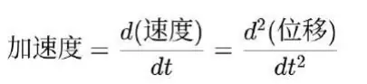
这就是微分的本质：把 ΔSIO（差异单元） 精确化为瞬时的变化率。
3. 积分的思想
牛顿同时意识到：如果能通过流数（微分）表达瞬时变化率，那么我们就能通过“逆过程”来重建整体。
从加速度积分，得到速度；
从速度积分，得到位移。
这种“逆过程”就是积分的萌芽。在牛顿的视角里，积分是“流量的累积”，它与微分是互为逆运算的双生子。
4. 力学中的应用
牛顿最伟大的成就，是将微积分直接应用于力学与天文学，完成了自然规律的统一。
1. 力学基础：F = ma
通过“流数”的思想，牛顿将“力”定义为使物体速度（即动量）发生变化的原因。
用方程表达：
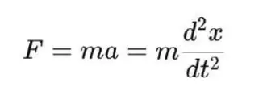
这是世界上第一条真正的动力学微分方程。它把自然运动从“目的论”彻底转向“差异关系”。
2. 天文学统一：开普勒定律的解释
开普勒定律指出行星轨道是椭圆，但没有解释原因。
牛顿结合万有引力定律：
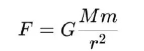
再与 F = ma 结合，形成微分方程，解出行星轨道。
结果：开普勒定律不是经验事实，而是牛顿力学的推论。
3. 运动预测：炮弹、潮汐与摆动
牛顿通过微分与积分的方法，不仅解释了天体运动，还能预测地面物体的轨迹，如抛物线运动、钟摆周期。
科学从“观察解释”转变为“方程预测”。
5. 牛顿微积分的特征
牛顿的微积分有三个鲜明特点：
1. 物理直观优先
他不是从抽象数学出发，而是从自然现象中寻找需要的数学工具。
微积分在他这里首先是“自然动力学的语言”。
2. 时间中心化
牛顿的流数法始终围绕“随时间变化”。
这使他的微积分特别适合描述运动与力学过程。
3. 符号体系有限
牛顿的符号体系复杂笨拙，没有莱布尼茨的“dx/dt”那样简洁。
这使他的微积分在传播上不及莱布尼茨体系，但在物理直觉上更强。
6. 对科学革命的意义
牛顿的微积分意义在于：
它将“ΔSIO（差异单元）”——如位置差异、速度差异、加速度差异——全部符号化。
它将科学从经验定律推进到普遍方程，使自然现象第一次能被整体解释。
它把天文学与地面物理学统一在一个体系中，结束了“天上与人间的分裂”。
科学从此进入新的纪元：
不再依赖经验拼凑，而是通过 微分—积分的循环，把自然的运动建模为方程。
科学的对象从“实体”变为“差异关系”，这正呼应 SIO 本体论的逻辑。
小结
牛顿的微积分，是自然科学的“动力学版本”。它的根本意义在于：用流数（微分）把自然的瞬时差异关系精确化，用积分把这些差异关系还原为整体运动轨迹。借助这一方法，牛顿统一了天体与地面运动，奠定了现代科学的第一性框架。
第三节：莱布尼茨的微积分
1. 莱布尼茨的思想背景：符号与逻辑
戈特弗里德·威廉·莱布尼茨（Gottfried Wilhelm Leibniz, 1646–1716），是一位哲学家、逻辑学家、数学家。他的知识兴趣极为广泛：神学、法律、外交、逻辑、数学。他与牛顿的起点不同，不是从物理学的迫切需求出发，而是从 符号化思维与逻辑演算 出发，追求一种普遍的计算体系。
莱布尼茨认为：人类思想的混乱，源于语言与符号的模糊。 如果能建立一套精确的符号系统，所有推理都可以转化为机械的演算。他提出“通用演算”（calculus universalis）的构想：一种能处理一切知识的符号体系。微积分正是在这种追求中被创造出来的。
2. 微分符号的创造
莱布尼茨的关键贡献是引入了全新的符号体系。
他用字母“d”表示“差异（differentia）”。
dx 表示 x 的一个无穷小变化；
dy 表示 y 的一个无穷小变化。
导数的概念因此出现：
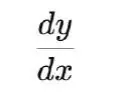
表示 y 关于 x 的变化率。
这一符号直观、简洁，极易操作。它把 ΔSIO（差异单元） 用最小粒度的符号形式表达出来，使差异的逻辑关系得以代数化。
3. 积分符号的创造
莱布尼茨同时引入了积分符号：
∫ 来源于拉丁文“summa”（求和）。
它表示把无穷多个差异累积起来，得到整体量。
例如：
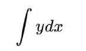
表示把 y 对 x 的所有微小贡献累积，重建整体。
这正是 SIO 的理念重建：通过积分，把不可直接感知的整体，从差异的集合中重新构造出来。
4. 系统化方法与级数展开
莱布尼茨不仅引入符号，还发展了一整套计算方法：
积分与微分互为逆运算；
用级数展开函数，处理复杂曲线；
提出“积分类比”思想，把几何面积计算转化为积分问题。
这些方法极大地扩展了微积分的适用性，使它从少数物理问题的工具，变为普遍的数学体系。
5. 与牛顿的不同
牛顿的微积分根植于物理直觉，而莱布尼茨的微积分建立在符号逻辑。二者有明显差异：
1. 起点不同
牛顿：关心的是运动与力的物理解释。
莱布尼茨：关心的是符号与逻辑的普遍演算。
2. 符号体系不同
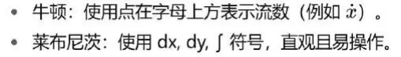
3.
传播效果不同
牛顿的符号体系较为复杂，只在英国流行；
莱布尼茨的符号简洁明快，迅速在欧洲大陆传播，成为今日标准。
4. 莱布尼茨的哲学视角
莱布尼茨把微积分与他的哲学体系结合起来：
在《单子论》中，他提出世界由“单子”构成，每个单子都是差异的显影。
微积分正是处理差异与整体关系的数学工具。
在他看来，微积分不仅是数学，更是宇宙的“形而上学语言”。
这与牛顿形成鲜明对比：牛顿强调经验与物理，莱布尼茨强调逻辑与哲学。
5. 对科学的意义
莱布尼茨的贡献不仅在于数学，还在于 科学方法的形式化：
他让科学家能够脱离几何直观，用符号直接计算复杂问题；
他把科学建模转化为代数演算，大幅提升效率与普遍性；
他开启了“科学即计算”的观念，为后来的数理逻辑与计算机科学埋下伏笔。
小结
莱布尼茨的微积分，是自然科学的“符号化版本”。
它的核心贡献在于：将 ΔSIO（差异单元）用 dx, dy 表征，将整体 SIO 用 ∫ 重建。他把微积分从一种物理直觉工具，转化为普遍的数学演算体系。
因此，牛顿的微积分更像“科学的发动机”，莱布尼茨的微积分更像“科学的语言”。
第四节：Newton 与 Leibniz 的比较与争论
微积分的历史，因牛顿与莱布尼茨的同时发现，而带有一种独特的双生性。这种双生性一方面展现了科学发展的必然逻辑：17世纪的天文学、物理学、数学积累已使微积分呼之欲出；另一方面，也引发了科学史上最激烈的“优先权之争”。
1. 相同点：殊途同归
共同目标：二人都在追求“如何表征连续变化，如何从差异重建整体”的方法。
共同成果：二人都建立了微分与积分互为逆运算的思想。
共同意义：都使科学能够从 ΔSIO（差异单元）的观测，推导出整体SIO的动力学模型。
因此，从科学逻辑看，微积分的出现不是偶然，而是历史必然。
2. 不同点：方法与立场
牛顿
出发点：力学与天文学的实际问题。
特征：强调物理直观，把微积分看作研究自然的工具。
符号：使用流数法（点在字母上方），操作复杂。
莱布尼茨
出发点：逻辑与符号的演算。
特征：追求普遍符号体系，把微积分看作演算语言。
符号：dx, dy, ∫，简洁优雅，便于推广。
牛顿的体系更贴近自然直觉，莱布尼茨的体系更利于普遍传播。最终，历史选择了莱布尼茨符号。
3. 优先权之争
牛顿早在1666年前后就已构思流数法，但直到1693年才公开部分成果。
莱布尼茨在1670年代独立发现微积分，并于1684年发表论文，首次系统使用 dx、dy、∫ 符号。
到18世纪初，双方支持者爆发争论，互相指责对方抄袭。
英国学术界长期坚持牛顿的优先权，欧洲大陆则支持莱布尼茨。
这场争论甚至造成英国科学与欧洲大陆科学的数十年隔阂，使英国数学在18世纪相对落后。
4. 影响与结局
学术层面：争论虽然激烈，但并未掩盖微积分作为科学基础的价值。
历史层面：最终，莱布尼茨的符号体系被普遍采用，因为它更直观、更便捷。
思想层面：这场争论体现了科学从“个体发现”走向“制度化知识”的过程。科学知识不再属于个人，而属于人类共同体。
小结
牛顿与莱布尼茨的比较告诉我们：
牛顿赋予微积分以物理直觉，使其成为动力学科学的核心工具；
莱布尼茨赋予微积分以符号逻辑，使其成为普遍演算的数学语言。
二人之争既是科学史的插曲，也是文明进步的见证。因为从此，科学知识的传播与应用，不再依赖个人天才，而依赖可共享的符号系统与制度平台。
第五节：微积分的科学意义
微积分的发明，不仅是一场数学革命，更是整个科学体系走向成熟的根本动力。它第一次为人类提供了一个普遍工具，使科学能够从 经验描述 进入 方程建模，从“看见现象”进入“解释与预测”。
1. 科学发现的形式化
在微积分出现之前，科学发现往往是经验的归纳。比如：伽利略发现自由落体的位移与时间平方成正比，开普勒总结行星运动的三定律。这些定律本质上是 ΔSIO 的稳定化描述，但缺乏差异关系的形式表达。
微积分改变了一切：
微分：捕捉 ΔSIO 的瞬时变化，把“速度”与“加速度”转化为方程关系。
积分：从局部差异出发，重建整体轨迹或总量。
科学现象从此不再只是“现象”，而是可以被写成 微分方程。
2. 科学发明的系统化
科学不仅是发现规律，更是发明理论。积分的引入，使科学家能够：
把分散的差异数据整合成整体模型；
用数学重建不可直接感知的整体 SIO；
预测未来的运动与状态。
这种“发现—发明”的统一，是现代科学创造力的核心。
3. 知识结构的转型
微积分让科学完成了质的转变：
经验科学 → 理论科学；
观察描述 → 方程建模；
事后解释 → 事前预测。
科学的知识结构从此建立在 微分方程与积分模型 之上。
4. 对学科的深远影响
微积分不仅奠定了物理学的基础，还迅速扩展到其他学科：
物理学：牛顿力学、天体运动、光学、电磁学；
工程学：流体力学、结构力学、控制论；
生物学：种群模型、生态系统动力学；
经济学：边际分析、动态均衡模型。
所有这些领域的突破，都依赖于微积分提供的统一语言。
小结
微积分的科学意义在于：
它让科学能够抓住 ΔSIO 的差异关系，并将其转化为符号方程；
它让科学能够从差异出发，发明整体模型；
它让科学从经验的碎片，转化为理论的整体。
可以说，没有微积分，就没有现代科学。微积分是科学的“内核程序”，一切理论科学都在它的运行框架中诞生。
第六节：微积分的哲学意义
微积分不仅仅是一种数学工具，它还深刻改变了人类理解世界的方式。在哲学层面，它揭示了存在的结构、认识的路径与文明的根基。
1. 存在论的启示
微积分告诉我们：存在并不是静止的实体，而是 差异（ΔSIO）的流动 与 整体（SIO）的重建。
微分：让我们看到差异的生成与瞬时关系；
积分：让我们从差异的集合中重建整体的形态。
这与 SIO 本体论完全呼应：世界不是先验的“物”或“我”，而是主体、互动、客体在差异与整体中的动态生成。
2. 认识论的转型
在微积分之前，人类对世界的认识依赖直观、经验和哲学思辨。
微积分的发明，让认识第一次获得了“符号化的差异工具”。
科学知识不再是“看见现象”，而是“写下方程”。
这意味着：知识的必然性，不再依赖经验的重复，而是建立在特征纠缠的符号化表达之上。
3. 方法论的确立
微积分成为科学方法的核心：
它统一了“发现与发明”：发现差异关系，发明整体模型；
它统一了“局部与整体”：局部的 ΔSIO 与整体的 SIO；
它统一了“自然与文明”：自然现象与社会过程，都能用微积分建模。
4. 文明的意义
微积分的意义不仅在科学，还在文明。它让人类第一次能系统地 解释、预测、控制并创造 自然与社会。
它是技术革命的数理基础；
它是文明自由度扩展的发动机；
它是人类摆脱经验偶然性、进入创造必然性的关键。
小结
在哲学层面，微积分的意义可以归结为一句话：
👉 它让世界被理解为差异—整体的生成过程，让知识被建构为符号化的差异关系，让文明被推动为自由度的不断扩展。
因此，微积分不仅是数学的胜利，更是人类思想与文明的转折点。
结尾总结
牛顿与莱布尼茨，分别从物理与符号出发，几乎同时完成了微积分的奠基。他们的发现不是偶然，而是17世纪科学革命的必然产物：天文学呼唤动力学的解释，物理学呼唤连续变化的建模，数学呼唤更高层次的演算工具。微积分的出现，回应了这些呼声，并为科学提供了前所未有的统一语言。
微积分的意义在于，它第一次让人类能够把 ΔSIO（差异单元）的瞬时变化 符号化为微分方程，再通过积分重建 整体SIO 的结构。科学从此不再只是经验记录，而成为能够解释、预测和创造的理论体系。
从存在的角度看，微积分揭示了“差异与整体”的生成逻辑；从认识的角度看，它确立了符号化知识的必然性；从文明的角度看，它成为科技创造力的数学基因。
因此，我们可以说：没有微积分，就没有现代科学。而在SIO思想体系中，微积分正是连接 ΔSIO 与整体SIO 的核心机制。这将引领我们进入下一章：微积分与SIO差异。
第四章：微积分与SIO差异
引言
微积分的发明，使科学从经验描述进入理论建模；但一个更深层的问题是：为什么科学现象能够被微积分符号化？ 换句话说，实验数据为什么能够写进方程，而不是停留在杂乱无章的观测堆积？
答案就在于：科学的真正对象不是“实体”，而是 SIO差异（ΔSIO）。然而，差异本身往往处于混沌和流动之中，如果没有某种机制，它们无法稳定化，也就无法被意识捕捉和记录。正是在这里，WDS特征律 发挥了决定性作用。
特征律揭示：SIO差异在复杂性科学的机制下——经过 混沌—自组织—涌现 的层级迭代，产生了 差异稳定性。当差异趋向稳定时，意识才能对其进行同一化，即“看见一个特征”。这就是“意识同一性”的发生。而一旦特征涌现，它就可以被记录下来，成为科学现象的数据。
由此我们看到，科学现象的可记录性，并不是先天给定的，而是特征律的产物。而微积分之所以能成为科学的数学内核，正是因为它表征的正是这些 已经稳定化了的差异关系。微分方程抓住的是差异关系的稳定模式，积分则从差异的累积中重建整体。
因此，特征律是微积分与SIO差异之间的桥梁：
没有特征律，差异无法稳定为可被记录的数据；
没有微积分，差异数据无法上升为理论建模。
第一节：SIO差异的本体地位
SIO本体论认为，存在不是主体（S）、客体（O）或互动（I）的单独先验实体，而是三者的整体复合体。每一个存在，都可以分解为一系列 SIO 的集合与网络。
在这个框架下，世界运行的最小单位不是“物”，而是 差异（ΔSIO）。差异是 SIO 在动态运行中的第一性显影。
当主体感知一个物体时，他所捕捉到的不是“整体实体”，而是某个差异：颜色的差异、亮度的差异、形状的差异。
当科学家做实验时，仪器记录下来的也是差异：温度差、位置差、电压差、时间差。差异并不依赖单一主体或客体，而是 SIO 整体互动中的产物。
因此，差异才是真正的科学对象。
1. 差异优先于实体
我们通常以为科学研究的是“实体”，例如电子、苹果、星球。但事实上，所有这些实体都是 差异稳定化的结果。
电子之所以被认定为实体，是因为它在观测中表现出稳定的电荷和质量特征。
苹果被认定为实体，是因为它在颜色、味觉、触感等差异上保持稳定一致。
换句话说，实体的“存在感”并不是自然给定的，而是差异在特征律下被稳定化之后，意识对其投影的结果。
2. 差异是可记录的科学现象
实验的“数据”，从来不是整体，而是差异。
温度计记录的不是“热的本质”，而是温度差；
秒表记录的不是“时间实体”，而是时刻之间的间隔；
显微镜看到的不是“完整生命”，而是结构上的细微差异。
因此，科学现象之所以可以被数字化、符号化，正是因为它们本质上是差异，而差异可以被记录。
3. 差异是科学与数学的交汇点
如果说 SIO 是存在的整体，那么 ΔSIO 就是存在的“入口”。
对科学而言，差异是实验可接触的最小单元；
对数学而言，差异是符号可以操作的最小单位；
对微积分而言，dx、dy 就是差异的形式化写法。
由此我们看到：科学与数学的交汇点，并不在实体，而在差异。实体不可直接感知，只能通过差异显影；而差异一旦被记录，就能进入微积分的符号系统。
小结
差异（ΔSIO）是科学的真正研究对象。科学现象的本质，就是差异的显影；科学实验的记录，就是差异的积累；科学建模的数学化，就是差异关系的符号化。而差异之所以能够稳定化为“现象”，正是因为 WDS特征律 的运行。
第二节：特征律与差异稳定化
1. 特征律的基本命题
WDS特征律的核心命题是：SIO差异并不是天然稳定的，而是通过复杂性科学机制——混沌、自组织与涌现的层级迭代，逐渐稳定化为“特征”。
这种稳定化带来两个后果：
1. 差异在时间上获得了一致性，表现为重复性；
2. 差异在意识中被投射为“同一物”，也就是特征或实体感。
换句话说，特征律解释了为什么“意识的同一性”会出现：我们为什么能说“这是苹果”“这是电子”“这是行星”。没有特征律，世界只会呈现为混乱无序的差异流动，任何“科学现象”都无法被记录。
2. 混沌 → 自组织 → 涌现
差异的稳定化不是线性发生的，而是一个典型的复杂性过程：
混沌阶段：差异随机出现，没有稳定模式。
例如：初看夜空中的繁星，杂乱无章。
实验中，传感器第一次接触信号时，读数杂乱无规律。
自组织阶段：差异开始表现出局部相关性。
例如：星星的位置呈现出周期运动，可以追踪星座。
温度计放在水里，读数逐渐趋于稳定，说明热平衡在形成。
涌现阶段：差异在整体层次上形成稳定模式。
例如：行星轨道显现为椭圆；天气系统显现出气旋。
在实验中，温度表读数固定在37℃，于是我们说“水是37℃”。
正是通过这种复杂性机制，差异获得了稳定性，成为“科学现象”。
3. 物理学中的例子
(1) 摆动与周期性
单摆在开始摆动时，空气阻力、摩擦、初始推力等差异会导致摆动轨迹混乱。
经过几个周期后，摆动趋于稳定，表现为一个恒定的周期 T。
我们能记录“单摆周期”作为科学现象，是因为差异通过自组织稳定化为特征。
(2) 气体分子运动
单个分子的速度是随机的，处于混沌状态。
通过大数定律和统计平均，涌现出“温度”这一特征。
温度是无数差异的涌现稳定化结果，不是个别分子的属性。
(3) 行星运动
夜空中行星的运动最初是混乱的（逆行现象）。
经过长期观测和数学整理，开普勒发现椭圆轨道。
这种“轨道特征”是差异数据（Δ位置/时间）经过涌现而稳定的结果。
4. 化学中的例子
(1) 物质状态
水分子的运动极为复杂，液态时分子无序碰撞。
但通过温度与压力的调控，涌现出三种稳定状态：固态、液态、气态。
“水有三态”是一个涌现的特征。
(2) 反应速率
在微观层面，每一次分子碰撞都是随机的。
但在宏观实验中，反应速率表现为稳定的方程式（如速率定律）。
可被记录的速率特征是差异的稳定化产物。
5. 生物学中的例子
(1) 细胞膜电位
膜上离子的运动充满混乱，每个通道随机开合。
然而整体表现为一个稳定的“静息电位”，可被实验记录为 -70mV。
这个“电位特征”是差异的涌现。
(2) 种群增长
个体的出生与死亡是随机的。
但在种群层面，呈现出稳定的 Logistic 增长曲线。
曲线作为特征，正是差异通过自组织稳定化后的结果。
6. 心理学与社会学中的例子
(1) 知觉稳定性
视觉输入的光线、角度、距离都在变化（差异）。
但我们总能认出“这是同一张脸”，这是特征律的作用。
(2) 市场价格
每笔交易的差异性很大。
但在整体市场上，价格形成相对稳定的“均衡价”。
这是差异通过自组织与涌现，转化为经济学可记录的现象。
7. 科学现象的可记录性
通过这些例子，我们可以看到：
差异的原始状态是混乱的，无法直接成为科学现象。
只有在特征律的作用下，差异才会获得稳定性，成为可被意识同一化的“特征”。
科学实验的数据，本质上是涌现特征的记录。
这意味着：
温度计上的“37℃”不是“输入值”，而是差异在特征律作用下涌现出的稳定现象。
秒表记录的“1.2秒”不是“真实时间本体”，而是差异稳定化后的显影。
因此，科学现象本质上是 特征律运行的产物。
8. 与微积分的关系
一旦差异被特征律稳定化，就能进入微积分的符号系统：
微分：抓住差异关系的稳定模式。
积分：从差异的累积重建整体。
如果没有特征律，差异无法稳定，实验记录将永远是噪音，微积分也就无从建立。
👉 所以，特征律是微积分与SIO差异之间的桥梁。
小结
特征律解释了科学现象为何能够被记录：
差异（ΔSIO）经过复杂性机制（混沌—自组织—涌现） → 稳定化 → 意识同一性（特征）。
只有这样，科学现象才具备可重复性与可表征性。
微积分之所以能建模科学现象，是因为它所表征的正是这种 差异稳定性。
第三节：微分与差异关系
在科学建模中，微积分的第一个核心环节是 微分。它的本质并不是简单的数学技巧，而是 将 ΔSIO（差异单元）之间的关系符号化为稳定模式。
1. 微分的本质
设想一个物体在时间 t 上的位置是 x(t)。
在 ΔSIO 的层次，我们真正能够测量的只是 在不同时间点的位移差：Δx。
当我们把 Δx/Δt 推向极限时，就得到微分：
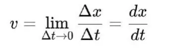
这个过程说明：
dx/dt 并不是“天生存在的比率”，而是 ΔSIO 稳定化后的极限形式。
它背后的前提是：位移差在时间上表现出可重复、可逼近的稳定模式。
这种稳定性，正是 特征律 的贡献。
因此，微分符号 dx, dy 并不是任意符号，而是 ΔSIO 的形式化显影。
2. 差异关系的稳定模式
微分的价值，在于把复杂的差异数据抽象为一个 稳定关系：
速度 v = dx/dt：位置差与时间差之间的关系。
加速度 a = dv/dt = d²x/dt²：速度差与时间差之间的关系。
电流 I = dq/dt：电荷差与时间差之间的关系。
每一个微分方程，都是 ΔSIO 在特征律运行下表现出的 稳定关系的符号表达。
3. 微分方程与科学现象
微分不仅表征差异关系，更重要的是通过 微分方程 捕捉差异关系的系统性：
牛顿第二定律：
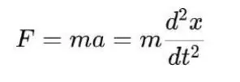
这个方程说明：力与加速度之间存在稳定关系。
但要注意：这个“稳定性”并不是自然先验的，而是 ΔSIO 在特征律运行下涌现的结果。热传导方程：
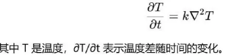
这个方程成立的条件，是温度差在实验中表现出稳定性和可重复性。
种群动力学方程：
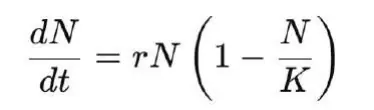
N 是种群数量。这个方程表征出生与死亡差异在长期统计下的稳定模式。
可见，每一个科学现象进入微分方程的前提，都是差异的稳定化。
4. 微分与特征律的关系
为什么 dx/dt 能够稳定存在？
因为 Δx/Δt 在实验中表现为可重复的规律。
而这种可重复性，来源于差异在复杂性机制下的涌现稳定性。
如果差异完全随机，Δx/Δt 就没有极限，微分也就无从定义。
因此：
特征律保证差异的稳定性；
微分把差异的稳定性符号化为方程。
这就是微积分与 SIO 差异之间的第一层桥梁。
5. 例子：从 ΔSIO 到微分
物理学：自由落体。实验中我们只能测量高度差（Δx）和时间差（Δt）。但在特征律的运行下，这些差异表现出稳定关系，于是我们得到：
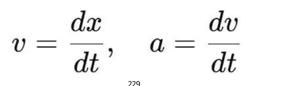
化学：反应速率。实验中我们记录物质浓度的差值 ΔC 与时间差 Δt。在差异稳定化后，速率常数 k 出现，得到：
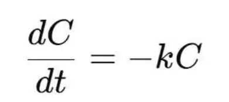
经济学：边际效用。消费者在价格差 Δp 与数量差 Δq 的数据中，表现出稳定的边际效用关系，于是：
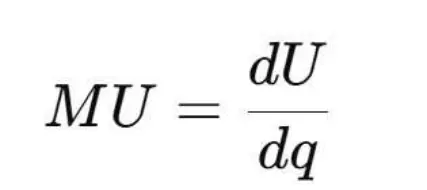
每一个案例都说明：科学现象的数据来源于 ΔSIO，而微分是 ΔSIO 稳定化后的形式化表达。
小结
微分的本质，是差异关系的符号化。
它抓住的不是静态实体，而是 ΔSIO 在时间、空间或其他维度上的差异流动。
它能够成立的前提，是特征律保证了差异的稳定性。
微分方程因此成为科学建模的第一步：把差异关系写成稳定模式。
因此，我们可以说：微分是差异（ΔSIO）在特征律下稳定化后的符号化显影。
第四节：积分与整体SIO
1. 积分的哲学位置
如果微分是对差异（ΔSIO）的符号化表征，那么积分就是“逆向操作”——从无数差异中重建整体。
微分：从整体运动中提取差异关系。
积分：把差异数据重新组合为整体模型。
在科学中，我们从来无法直接经验“整体SIO”，只能通过差异观测。积分正是弥合差异与整体的桥梁。
2. 积分的定义
设某个量 y 随变量 x 的变化可以记录为无数微小差异：dy。
把这些差异累加起来，就得到整体：
∫dy=y
在时间维度上：
加速度是速度差随时间的比率；
通过积分，加速度的累积得到速度，速度的累积得到位移。
积分的含义：从局部差异（ΔSIO）累积，还原为整体SIO的运动轨迹或结构。
3. 为什么积分合理？
积分能够成立，有一个前提：差异必须具有 稳定性。
如果差异完全无序（例如布朗运动的每一次轨迹），积分就无法收敛。
只有在特征律的作用下，差异表现出自组织与涌现，趋向稳定模式，积分才能合理。因此，积分不是纯粹数学的自明性，而是 特征律赋予差异稳定性 后的理念性操作。
4. 科学理论的积分性
科学理论的建构，本质上就是积分性的：
从大量差异实验数据出发，
通过数学整合，
形成一个整体模型。
例如：
物理学：从加速度（d²x/dt²）出发，积分得到速度、位移，建立整体运动方程。
热学：从热流的局部差异（dQ），积分得到系统总能量。
生物学：从出生/死亡的差异（dN），积分得到种群整体规模的动态曲线。
经济学：从边际效用（dU/dq），积分得到效用函数 U(q)。
这些例子都说明：科学理论是从差异累积中“发明”整体的积分性假设。
5. 积分与“整体SIO”的理念重建
整体SIO无法直接经验。
我们看不到“完整的宇宙实体”；
我们只能通过差异观测，构建理念上的整体。
积分的哲学意义在于：它为我们提供了一种方法，从差异数据回到整体的逻辑重建。
这个整体不是“客观先验”的，而是“积分性创造”的。
这种创造的合理性，正是基于特征律保证差异的稳定。
换句话说：积分就是科学发明性的数理表达。
6. 微分与积分的统一
微分：发现差异关系，描述 ΔSIO 的瞬时稳定模式。
积分：发明整体模型，从差异数据重建 SIO 的整体假设。
两者互为逆运算，共同构成科学的发生逻辑：
1. ΔSIO 差异 → 特征律稳定化 → 可记录数据。
2. 微分：符号化差异关系。
3. 积分：重建整体SIO。
小结
积分的意义在于：
它把差异数据（ΔSIO）累积为整体模型；
它使科学能够从局部观测上升为整体理论；
它的合理性依赖特征律赋予差异的稳定性。
因此，科学理论并不是对“客观整体”的直接发现，而是 差异在特征律稳定化后的积分性重建。这也揭示了科学的双重性：发现（微分）与发明（积分）的统一。
第五节：特征律作为桥梁
1. 问题的提出
我们已经看到：
科学实验记录的是 差异（ΔSIO），而不是整体实体；
差异本身处于混沌与流动状态，若不稳定化，就只能沦为噪音；
微积分的符号体系（dx, dy, ∫）需要 稳定的差异模式 才能发挥作用。
因此，一个根本问题是：为什么差异可以被记录？为什么差异可以被符号化？
答案就在于：WDS特征律。它是科学现象与科学理论之间的桥梁。
2. 特征律的核心命题
特征律说：SIO差异在复杂性科学机制（混沌 → 自组织 → 涌现）的层级迭代下，涌现出差异稳定性，从而导致意识同一性发生（特征出现）。
换句话说：
差异 → 在混沌中杂乱无章；
差异 → 通过自组织逐渐形成局部相关性；
差异 → 在涌现中表现为稳定模式；
意识 → 把这种稳定模式投射为“同一对象”或“特征”。
科学实验记录的数据，正是这种特征的显影。
例如：温度计上的“37℃”，并不是直接“输入”的，而是分子运动的差异在特征律运行下涌现为“稳定的温度特征”，才被记录下来。
3. 从ΔSIO到科学现象
我们可以把科学现象的发生链条写为：
1. ΔSIO：主体—互动—客体的差异单元。
例如：分子运动差异、电荷差异、位置差异。
2. 复杂性机制：混沌 → 自组织 → 涌现。
差异不是直接稳定的，而是通过迭代过程逐渐稳定。
3. 差异稳定性：在时间和空间上表现为可重复性。
例如：单摆周期趋于恒定，温度在热平衡中保持稳定。
4. 意识同一性：意识对稳定差异的投影。
“这是一个温度值”“这是一个位置”。
5. 科学现象记录：实验仪器把这种特征数字化，形成数据。
👉 没有特征律，这一链条就无法闭合，差异就无法进入科学。
4. 从科学现象到微积分
一旦差异稳定化为科学现象，就可以进入微积分的符号体系：
微分：对差异关系进行符号化。
dx/dt = 稳定差异在时间维度上的模式。
例如：速度、加速度、电流。
积分：对差异累积进行整体重建。
∫ f(x) dx = 差异稳定性累加后的整体。
例如：位移、能量、人口规模。
这表明：微积分只作用于稳定差异，而不是任意差异。
如果没有特征律的保证，微分就没有极限，积分就没有收敛。
5. 特征律的三大作用
(1) 保证科学现象的可记录性
差异必须涌现为特征，才能成为“数字”。
温度是分子运动差异的涌现；
时间是物理过程差异的涌现；
位置是空间差异的涌现。
(2) 保证科学现象的可重复性
科学实验的核心要求是可重复。
同样条件下，ΔSIO 稳定化为同样特征；
这正是特征律的功效。
(3) 保证科学现象的可表征性
差异一旦稳定化，就能进入数学符号系统。
dx, dy 并不是虚构，而是稳定差异的形式化。
6. 案例分析
(1) 物理学：牛顿第二定律
观测差异：位置差、速度差、时间差。
特征律：保证这些差异表现出稳定模式。
微积分：d²x/dt² 符号化为加速度，进入 F=ma。
(2) 热学：热传导方程
观测差异：局部温度差。
特征律：保证温度差在统计意义上稳定。
微积分：∂T/∂t 与 ∇²T 的关系写成偏微分方程。
(3) 生物学：种群增长
观测差异：出生/死亡差。
特征律：保证长期趋势稳定，表现为增长曲线。
微积分：dN/dt = rN(1-N/K)。
(4) 经济学：边际分析
观测差异：价格差、数量差。
特征律：保证市场在长期表现出可重复性。
微积分：MU = dU/dq，积分得到效用函数。
每一个案例都展示了：ΔSIO → 特征律 → 微积分。
7. 特征律作为桥梁的哲学意义
存在论：差异不是先验稳定的，只有通过特征律才稳定化为现象。
认识论：科学不是直接发现“实体真理”，而是记录差异稳定化的结果。
方法论：微积分之所以能建模科学，是因为它表征的正是差异的稳定模式。
因此，特征律不仅是科学的隐性前提，更是微积分成为科学内核的根基。
8. 总结：统一链条
我们可以把整个过程总结为一个统一链条：
1. ΔSIO（差异单元）
2. 特征律（混沌—自组织—涌现 → 稳定性）
3. 意识同一性（特征出现，可被记录）
4. 科学现象（实验数据）
5. 微积分（差异关系符号化 → 整体重建）
这条链条揭示了科学发生的真正逻辑：
科学现象并不是世界本身，而是特征律下差异的涌现。
微积分并不是纯粹的数学，而是差异稳定性的符号化机制。
特征律是微积分与SIO差异之间的必然桥梁。
第六节：案例分析
特征律作为微积分与SIO差异的桥梁，并不是抽象命题，而是在科学实践中处处显现。下面从几个典型领域来说明：物理学、天文学、生物学、经济学与认知科学。
一、物理学：牛顿力学与运动规律
物理学是最直观展现“差异—特征—微积分”的领域。
1. 差异（ΔSIO）
在自由落体实验中，伽利略记录的是高度差 Δx 与时间差 Δt。实验数据本质上是“差异单元”：某一时刻物体位置与前一时刻的差异。
2. 特征律
如果每次实验的数据完全随机，那就无法得到任何规律。但在特征律的作用下，差异表现为 稳定模式：在相同条件下，位移差随时间平方增长，速度差随时间线性增长。这种差异稳定性让我们意识到“加速度是恒定的”。
3. 微积分
牛顿把这种稳定模式符号化为：
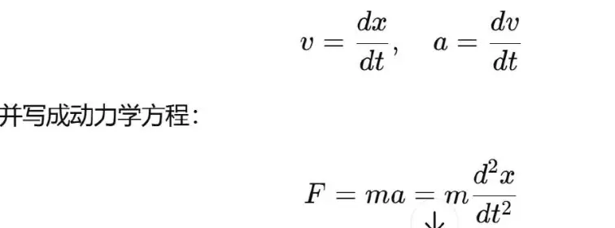
4. 小结
自由落体与动力学定律表明：科学现象是差异的记录，特征律保证差异稳定，微积分把差异关系转化为方程。
二、天文学：开普勒定律与牛顿引力
天文学的发展，同样遵循这一链条。
1. 差异（ΔSIO）
布拉赫的天文台积累了数万条观测数据，每一条都是“行星位置的差异”：在某个时间点的角度与上一个时间点的差别。
2. 特征律
这些数据最初杂乱无章，但开普勒发现，差异在长期观测中显现出稳定模式：轨道不是圆，而是椭圆；扫过的面积与时间成正比；周期平方与半长轴立方成正比。这些规律都是 特征律作用下的差异稳定化结果。
3. 微积分
牛顿进一步利用微积分，把这些经验定律解释为万有引力的结果：
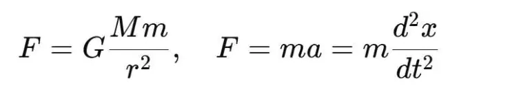
通过积分，得到椭圆轨道解，重建了整体运动模型。
4. 小结
天文学案例表明：差异观测 → 特征稳定化为经验定律 → 微积分理论化为动力学模型。
三、生物学：种群增长与生态平衡
生命科学中的种群动力学，是特征律与微积分结合的典范。
1. 差异（ΔSIO）
生态学家记录的原始数据是：某个时间内种群数量的增减，即出生数与死亡数的差异。
2. 特征律
个体层面是混乱的：每只动物的生死不可预测。但在种群层面，差异表现出稳定模式：在资源充足时，种群指数增长；在资源有限时，增长放缓。这种稳定性就是特征律的结果。
3. 微积分
这种模式被符号化为微分方程：
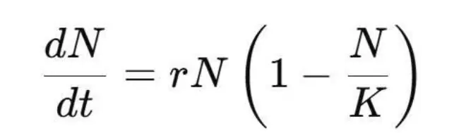
其中 N 是种群规模，r 是增长率，K 是环境容纳量。通过积分，科学家重建了 Logistic曲线，描述了整体种群动态。
4. 小结
生物学表明：差异（出生/死亡） → 特征律稳定化为增长模式 → 微积分建模为动力学曲线。
四、经济学：边际效用与市场均衡
经济学中的边际分析，同样遵循“ΔSIO—特征律—微积分”的逻辑。
1. 差异（ΔSIO）
消费者的每次选择，都表现为效用的差异：ΔU 对应 Δq（商品数量的差异）。
2. 特征律
单个消费者的选择是随机的，但在总体层面，差异表现出稳定性：商品数量越多，边际效用逐渐递减。这是特征律保证的“差异稳定化”。
3. 微积分
经济学家用微积分表达这一规律：
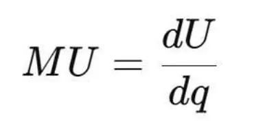
通过积分，得到整体效用函数 U(q)。市场价格均衡，也是在无数交易差异中涌现出的稳定特征，再被微积分建模为供需曲线的交点。
4. 小结
经济学表明：个体差异混乱 → 特征律保证稳定性 → 微积分建模为边际与均衡。
五、认知科学：知觉稳定与意识同一性
认知过程是特征律与微积分在心理学层面的显影。
1. 差异（ΔSIO）
视觉输入是光线的无数差异：亮度差、颜色差、角度差。
2. 特征律
如果没有稳定化，这些差异只是混乱的像素流。但在大脑的自组织作用下，差异涌现为“稳定形象”：我们认出“这是同一张脸”。
3. 微积分
认知神经科学家把这种知觉过程建模为动态系统，用微分方程表达神经活动的变化率，并用积分解释长期稳定的感知模式。
4. 小结
认知科学表明：感官差异 → 特征律涌现稳定形象 → 微积分建模神经动力学。
总结
跨越物理学、天文学、生物学、经济学与认知科学，科学发展的共同逻辑是：
1. 差异（ΔSIO）：实验与经验的第一性记录。
2. 特征律：通过混沌—自组织—涌现，保证差异的稳定化。
3. 微积分：符号化差异关系，重建整体模型。
换句话说：科学现象不是实体的直接给定，而是差异在特征律作用下涌现的稳定结果；科学理论不是实体的发现，而是差异稳定性在微积分中的符号化重建。
结论
通过本章的探讨，我们可以明确回答一个根本问题：为什么科学现象能够被微积分所表征？
答案在于 WDS特征律。科学现象并不是“实体的直接显现”，而是 SIO差异（ΔSIO）在复杂性机制下稳定化的结果。差异经过 混沌—自组织—涌现 的层级迭代，获得了稳定性，进而被意识同一化为“特征”。特征的出现，使差异具备了可记录性、可重复性和可表征性，从而进入科学实验和数据积累的环节。
在这一基础上，微积分登场：
微分 把稳定化的差异关系符号化，写成 dx/dt、dy/dx 这样的形式，建立起差异之间的规律模式。
积分 把无数差异的累积重建为整体模型，使科学能够超越局部观测，发明整体理论。因此，科学现象与科学理论之间的统一链条可以总结为：
1. ΔSIO（差异单元）
2. 特征律：差异稳定化 → 特征涌现
3. 科学现象：可被记录与重复的数据
4. 微积分：差异关系的符号化与整体重建
5. 科学理论：稳定模型与预测系统
这一链条揭示了科学的本体根基：科学不是对实体的发现，而是对差异稳定性的建模；微积分不是纯粹的数学技巧，而是差异必然性的符号化机制。
所以，我们可以说：
没有特征律，就没有科学现象；
没有微积分，就没有科学理论；
特征律是微积分与SIO差异之间的桥梁。
这也意味着：科学的真正发生逻辑是 ΔSIO—特征律—微积分 的统一。
第五章：科学现象、微分方程与积分性的统一展开
引言
在前几章，我们已经看到：科学现象的本质并不是“实体的直接显影”，而是 SIO差异（ΔSIO） 在 WDS特征律 的作用下稳定化为特征，从而可被意识同一化和实验记录。微积分的力量，正是在于把这些差异关系符号化为方程，并通过积分把局部差异重建为整体模型。
然而，一个更深刻的问题随之而来：科学现象、微分方程与积分性之间的内在统一关系究竟是什么？
如果只讲“微分方程”，科学就容易被误解为差异关系的记录学；如果只讲“积分”，科学又容易被误解为整体假设学。实际上，科学之所以成为科学，正是因为它同时具有微分与积分的双重性：既发现差异关系，又发明整体模型。
本章将深入探讨这一统一：
1. 从 ΔSIO → 特征律 → 微分方程 的过程，解释科学现象如何被符号化；
2. 从 差异累积 → 积分 → 整体模型 的过程，解释科学理论如何被发明；
3. 展示微分与积分的一体化循环：科学的“发现—发明二性”；
4. 结合物理、天文、生物、经济、认知等领域的案例，说明这一逻辑的普适性。
第一节：从ΔSIO到微分方程——科学现象的可写性
1. 差异是科学现象的第一性
当科学家做实验时，他们并不是直接面对“整体实体”，而是面对差异：
温度计读出的不是“热的本体”，而是温度差 ΔT；
秒表测量的不是“时间实体”，而是时刻之间的差异 Δt；
显微镜看到的不是“完整生命”，而是光强、形态上的差异 ΔI。
这些差异（ΔSIO）是科学现象的真正原料。
然而，差异本身往往处于混沌流动中。如果没有某种稳定机制，它们只会表现为噪声，不可能积累为数据。这里，特征律 起到了决定性的作用。
2. 特征律：差异的稳定化
WDS特征律告诉我们：差异在复杂性科学机制中会经历 混沌—自组织—涌现 的迭代。混沌：差异呈现随机性，例如分子无序运动。
自组织：差异之间逐渐产生相关性，例如气体分子趋向热平衡。
涌现：整体上出现稳定模式，例如“温度”这一宏观特征。
当差异稳定化后，意识会对其投射“同一性”，于是我们说：“水是37℃”，“物体下落有9.8m/s²加速度”。
这种稳定性，使差异第一次具备了 可重复性与可表征性，从而能够进入数学符号系统。
3. 微分：差异的极限化符号
设物体位置为 x(t)。实验记录的是 Δx/Δt，但在差异稳定化的前提下，可以取极限：
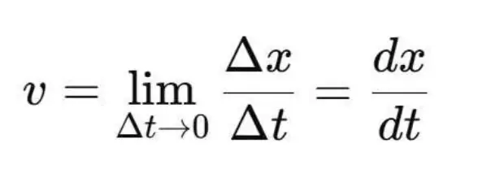
这一步的意义在于：
dx, dt 并不是任意符号，而是 ΔSIO 的极小化形式；
极限的存在，依赖于差异在特征律下表现出的稳定性；
微分把差异关系固化为“瞬时变化率”，成为科学现象的符号化表达。
4. 微分方程：差异关系的系统表征
一旦差异稳定化，我们就能写出差异之间的关系：
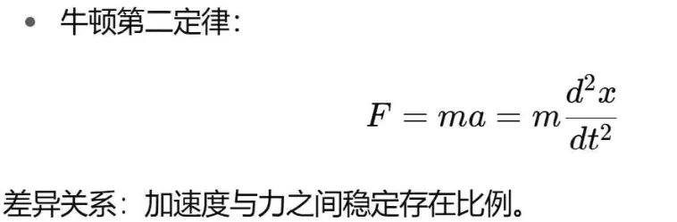
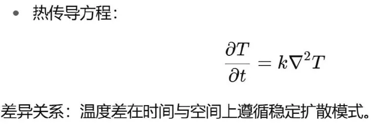
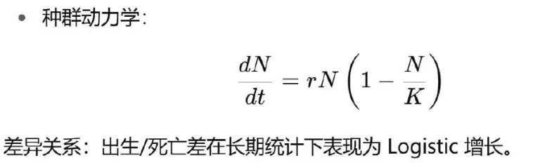
微分方程就是科学现象的 可写性：它们把差异关系写成稳定模式，奠定了科学建模的基础。
5. 初值与边值：SIO情境的嵌入
微分方程并不孤立，它需要 初值和边值：
初值：如 x(0), v(0)，代表主体与客体在某个起点的互动情境；
边值：如空间边界、环境条件，代表外部 SIO 网络的限制。
这说明，科学现象并不是“纯粹的差异”，而是嵌入到 具体SIO情境 中。初值与边值的存在，正是SIO整体性的投影。
小结
从 ΔSIO 到微分方程，科学现象完成了“可写化”：
差异 → 特征律稳定化 → 可记录数据；
微分 → 差异关系的极限符号；
微分方程 → 差异关系的系统表征。
微分是差异在特征律下的符号化显影。
第二节：积分：从差异累积到整体模型
1. 积分的哲学地位
微分是差异的极限化符号，而积分则是差异的回合与累积。
微分：从整体运动中抽取瞬时差异；
积分：从差异片段中重建整体结构。
在科学中，我们从来不能直接经验“整体SIO” 。我们所能记录的，始终是差异（ΔSIO）。因此，科学理论的建构必然依赖 积分性：一种理念性的整体重建。
换句话说：积分不是纯粹的计算技巧，而是科学发明性的本体表达。
2. 积分的基本形式
积分写作：
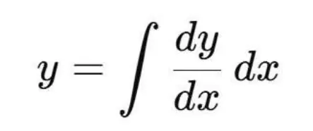
在时间维度上：
从加速度 a(t) 积分，得到速度 v(t)；
从速度 v(t) 积分，得到位移 x(t)。
在物理、化学、生物学、经济学中，这一逻辑无处不在：整体量总是差异关系的累积结果。
3. 积分的合理性：特征律的保障
积分能成立，前提是差异必须具备 稳定性。
如果差异完全无序，积分只会发散，无法收敛为整体量。
只有当差异在 特征律（混沌—自组织—涌现） 的作用下趋于稳定，积分才能成为有效的建模方法。
例如：
能量守恒：单个分子的碰撞是混乱的，但在统计意义上，能量差表现为稳定守恒，积分才可重建系统总能量。
市场供需：单个交易价格差是波动的，但长期来看，供需差稳定为曲线，积分才可得到消费者剩余。
因此：积分的合法性来源于特征律赋予差异的可整合性。
4. 积分与科学理论的建构
科学理论的构建，正是一个“积分性”的过程：
从大量差异数据出发；
借助微积分的形式化工具；
重建一个整体模型。
(1) 物理学
牛顿力学：从差异化的加速度数据（d²x/dt²）出发，积分得到速度和位移，形成整体运动模型。
(2) 热学
热力学：从热流的微小差异 dQ 出发，积分得到系统总能量 U。
(3) 生物学
生态学：从出生/死亡的差异 dN 出发，积分得到种群规模的整体曲线。
(4) 经济学
边际效用理论：从效用的差异 dU/dq 出发，积分得到整体效用函数 U(q)。
在这些案例中，科学理论并不是直接发现整体，而是通过积分发明一个理念整体。
5. 积分与“整体SIO”的理念重建
整体SIO 本身不可直接经验。
我们看不到“完整宇宙”，只能观测差异；
我们无法握住“整个有机体的本质”，只能检测变量差异。
积分的哲学意义就在于：它为我们提供了一种逻辑，把差异累积为整体的理念重建。
这种整体不是“在那里”的实体，而是通过积分假设被发明出来的。
科学理论本质上就是这种“积分性发明”。
因此：积分是科学发明性的数学形式。
6. 微分与积分的互为对偶
微分：发现差异关系。
积分：发明整体模型。
两者互为逆运算，共同构成科学的发生循环。
科学的真实逻辑是：
1. 差异（ΔSIO） → 特征律 → 可记录数据；
2. 微分 → 差异关系的符号化；
3. 积分 → 整体SIO的理念重建；
4. 再微分 → 从理论预测新的差异；
5. 新ΔSIO → 验证或修正理论。
7. 案例分析
(1) 运动轨迹的重建
数据：位置差 Δx 与时间差 Δt；
微分：dx/dt = v, d²x/dt² = a；
积分：从 a(t) 重建 v(t) 与 x(t)，得到整体轨迹。
(2) 种群增长的模型
数据：出生/死亡差 ΔN；
微分：dN/dt = rN(1-N/K)；
积分：重建 Logistic 曲线，整体描述种群增长。
(3) 市场福利的度量
数据：边际效用差 dU/dq；
微分：MU = dU/dq；
积分：U(q) = ∫ MU dq，得到整体效用函数。
这些案例说明：积分性发明是科学理论的本质。
小结
积分不仅是数学运算，更是科学理论建构的哲学根基：
它使差异能够累积为整体；
它让科学从局部观测上升为整体理论；
它的合理性依赖于特征律赋予差异的稳定性。
因此，科学的发现性来自微分，发明性来自积分；科学的发生逻辑，是微分与积分的统一。
第三节：微分—积分的一体化：科学的发现性与发明性的统一
1. 科学的双重性问题
自古以来，人类对科学的理解存在分歧：
一种看法认为科学是“发现”的活动：我们通过观察，揭示了自然界本来就存在的规律。
另一种看法则强调科学是“发明”的活动：科学理论是人类心灵的建构，并非自然的直接显现。
这两种看法在哲学史与科学史中长期对立。例如：
经验主义强调观察与发现；
理性主义则强调建构与发明；
康德试图用“先天综合判断”来调和两者，但结果陷入了形式先验性的虚幻。
SIO思想体系给出了解答：科学既是发现，也是发明；其统一机制正是微积分。
2. 微分：科学的发现性
微分方程代表科学的“发现面”。
当我们记录差异（ΔSIO）时，特征律保证差异在复杂性机制下稳定化。
微分把这些稳定差异关系符号化为方程，如 dx/dt, d²x/dt²。
科学家在此过程中“发现”了自然中的差异模式。
例如：
伽利略发现物体自由落体的加速度恒定；
牛顿用 d²x/dt² 表示加速度，把力与运动的关系写入方程；
在生物学中，Verhulst 发现种群增长的差异模式可被写成 dN/dt = rN(1-N/K)。
微分方程使我们“看见”了差异背后的必然性，这是科学的发现性。
3. 积分：科学的发明性
积分代表科学的“发明面”。
整体SIO不可直接经验，我们只能通过差异数据来接触它。
积分通过差异的累积与重建，把局部关系整合为整体模型。
这个过程本质上是一种理念创造，是科学的发明性。
例如：
牛顿从加速度积分，重建出行星的椭圆轨道模型；
热学中，通过积分能量流差异，重建整体能量守恒定律；
经济学中，从边际效用差异积分，发明了整体效用函数的概念。
积分之所以能成立，是因为特征律保证了差异的稳定性，使累积可收敛。
4. 微分与积分的一体化循环
科学的真实逻辑，并不是“先发现再发明”或“先发明再发现”，而是 微分与积分不断循环，互为验证与生成。
完整的链条可以写作：
1. ΔSIO：实验观测差异；
2. 特征律：差异稳定化 → 可记录数据；
3. 微分：差异关系的符号化；
4. 积分：整体模型的理念重建；
5. 再微分：从模型预测新的差异关系；
6. 新ΔSIO：通过实验获得新数据；
7. 验证或修正模型，循环往复。
这就是科学的发生学：发现与发明在微分—积分的一体化中统一。
5. 案例解析
(1) 牛顿力学
发现：微分符号化加速度关系（d²x/dt²）；
发明：积分重建运动轨迹与轨道模型；
一体化：理论再微分，预测行星位置，与观测新ΔSIO吻合。
(2) 热力学
发现：实验记录能量流的差异 dQ；
发明：积分能量，建立 U 的守恒模型；
一体化：理论再微分，推导温度梯度与热流关系。
(3) 种群生态学
发现：出生/死亡差异模式；
发明：积分重建 Logistic 曲线；
一体化：理论再微分，预测未来规模，与野外数据比对。
(4) 市场经济学
发现：个体选择差异 → 边际效用规律；
发明：积分整体效用函数；
一体化：理论再微分，预测价格机制与均衡点。
(5) 认知科学
发现：感官差异稳定为“特征”；
发明：积分神经动力学模型，重建知觉整体；
一体化：再微分预测知觉失调、错觉，与实验吻合。
6. 微积分作为科学的“发生引擎”
从哲学角度看：
微分对应于科学的发现性：差异模式的显影；
积分对应于科学的发明性：整体模型的创造；
特征律是二者得以成立的桥梁：差异必须稳定化才能进入符号系统。
因此，微积分不仅是数学技巧，更是科学的“发生引擎”：它推动科学不断在“差异与整体”之间往返，生成知识。
小结
科学的发现性与发明性，并非二元对立，而是微分与积分的一体化循环。
发现：通过微分，把差异稳定性符号化为规律；
发明：通过积分，把差异关系创造为整体模型；
一体化：微分与积分互为逆运算，在科学中形成无限循环。
这一逻辑统一回答了休谟的怀疑（为什么归纳合理）与康德的困境（先天综合判断的虚幻性）：
归纳的合理性来自差异的特征律稳定化；
必然性来自微积分在差异—整体循环中的运作。
科学的真实本质 = ΔSIO → 特征律 → 微分方程（发现） → 积分模型（发明） → 再微分预测 → 新ΔSIO。
总结
本章讨论了科学现象、微分方程与积分性的统一逻辑，揭示了科学为何能够既“发现”又“发明”。
科学现象的根基是 SIO差异（ΔSIO）。在 WDS特征律 的作用下，差异从混沌走向自组织与涌现，表现出稳定性，从而成为可记录的“特征”。这是科学数据得以存在的前提。
微分所做的，就是对这些稳定化差异关系的忠实记录。dx/dt, d²x/dt² 并没有虚构，它们是差异在极限化下的真实显影。微分方程的意义，在于它让科学对差异保持最直接的、精确的、瞬时的忠诚。因此，微分是科学的“忠实”部分，它是对差异事实的忠实抄写。
然而，科学并不满足于差异的记录。人类渴望理解整体，渴望从无数差异的碎片中把握整体SIO的形态。这就需要积分。积分不是对现象的单纯复制，而是一次理念性的重建：从差异累积到整体模型。整体模型并非“客观先验的存在”，而是我们对差异进行整合后的创造性发明。因此，积分是科学的“模型与发明”，它赋予差异以意义和结构。
微分与积分并非对立，而是科学的两翼：
微分让科学忠实于差异，保持发现的必然性；
积分让科学超越差异，创造整体模型，展现发明性。
科学的发生学逻辑正是建立在这两者的统一循环之上：
ΔSIO → 特征律 → 微分方程（忠实） → 积分模型（发明） → 再微分预测 → 新ΔSIO。
这告诉我们：科学既不是单纯的经验发现，也不是纯粹的理性建构，而是“忠实”与“发明”的双重性统一。微积分不仅是一种数学工具，更是科学发生的哲学语言。
第六章：科学知识的循环——
ΔSIO、特征律、微积分与意义
引言
在传统科学观念中，知识常常被视为不断累积的“真理库”：科学发现一个事实，再加一个事实，最终拼合出完整的真理图景。这样的观念既支配了近代科学的教育，也深刻影响了公众对科学的理解。人们倾向于把科学看作“真理的发现”，把科学理论视为对现实世界的忠实镜像。
然而，经验和历史不断提醒我们：科学知识并不是一部静止的“真理辞典”，而是一部 不断被差异推翻、又在重建中更新的历史。哥白尼革命推翻了托勒密的宇宙模型；相对论与量子力学打破了牛顿的世界观；基因与分子生物学重构了达尔文式进化论的内涵。科学理论一再“死亡”，又在新的框架中“重生”。
这种现象并不是科学的缺陷，而是科学的生命力所在。原因在于：科学的根基不是固定实体，而是SIO差异（ΔSIO）的不断生成。 差异经由 WDS特征律 获得稳定性，从而进入实验记录；差异关系通过 微分 被符号化，进入微分方程；差异的累积通过 积分 被发明为整体模型；然而新的差异纠缠总会出现，推翻旧的积分模型，迫使科学知识进入新的循环。
因此，科学知识不是静态的真理，而是 “差异—特征—微积分—模型—意义”的动态循环。
第一节：科学知识的发生链条
要理解科学知识的循环，首先要明确其基本发生链条。这条链条清晰地展现了从 差异 到 意义 的全过程。
1. 差异（ΔSIO）：科学的第一原料
科学研究并不是从整体实体出发，而是从差异开始。
天文学：观测的是星体位置的差异 Δθ；
物理学：测量的是时间差 Δt、位移差 Δx；
化学：记录的是浓度差 ΔC；
生物学：追踪的是种群数量的差异 ΔN；
经济学：统计的是价格差 Δp、供需差 Δq。
这些差异并不是孤立的“量”，而是主体—互动—客体（SIO）网络中生成的动态关系。差异是科学的最小发生单元。
2. 特征律：差异的稳定化
差异若完全无序，就只是噪声，无法积累为知识。WDS特征律 解释了科学现象为何可被记录：
差异在复杂性机制下经历 混沌—自组织—涌现；
在涌现层面表现出 差异稳定性；
意识因此产生“同一性投射”，把差异显影为“特征”。
例如：
单个分子运动混乱，但温度作为宏观特征稳定涌现；
个体生死难以预测，但种群增长率作为特征可被记录；
每笔交易价格波动剧烈，但市场均衡价作为特征被涌现出来。
差异的稳定化是科学现象可记录、可重复、可表征的前提。
3. 微分：差异关系的符号化
当差异稳定化后，就能进入符号化阶段。微分的意义在于：
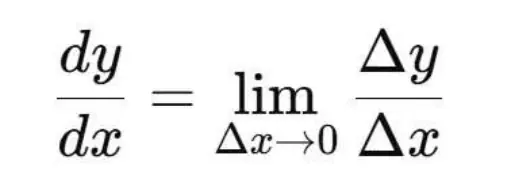
它把差异关系的稳定模式抽象为极限，写成“瞬时变化率”。
例如：
速度 v = dx/dt；
加速度 a = dv/dt；
反应速率 dC/dt = -kC；
种群增长 dN/dt = rN(1-N/K)。
微分是对差异关系的 忠实抄写，它让科学保持对事实的直接性。
4. 积分：整体模型的发明
整体SIO 无法直接经验，科学理论的建构本质上是 积分性的发明：
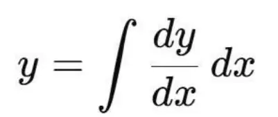
从加速度积分到速度，再积分到位移，重建运动整体；
从边际效用积分，得到整体效用函数；
从反应速率积分，得到反应完成度；
从出生/死亡差异积分，得到种群整体动态。
积分的合理性，依赖差异在特征律下的稳定性，否则无法收敛为整体模型。
5. 意义：知识与文明的生成
当整体模型被积分重建，人类便赋予它意义。
牛顿力学不仅解释运动，还构建了“机械宇宙”的世界图景；
达尔文进化论不仅解释物种，还重塑了人类对自身的理解；
相对论与量子力学不仅是物理模型，还颠覆了“空间”“时间”“现实”的意义。
科学知识不仅生成事实的描述，还生成文明的意义系统。
小结：知识的发生链条
科学知识的发生链条可以总结为：
1. ΔSIO（差异） →
2. 特征律（稳定化 → 特征） →
3. 微分（差异关系的符号化，发现性） →
4. 积分（整体模型的理念重建，发明性） →
5. 意义（知识系统与文明扩展）。
这条链条不是静态的，而是不断循环的，因为新的差异与纠缠会不断出现，推翻旧的积分模型，迫使科学知识重建。
第二节：模型的发明与暂时性
1. 模型的本质：积分性的发明
科学模型并不是自然世界的“原样复制”，而是差异数据在 积分性逻辑 下的理念重建。微分 给我们忠实的差异关系：dx/dt、dN/dt、dC/dt……
积分 则把这些差异关系累积成整体模型：轨道方程、增长曲线、能量守恒、效用函数。
然而，整体模型本质上是一种 发明：它是人类基于差异稳定化所做出的创造性假设。模型是“发明”，意味着它不是永恒真理，而是暂时的结构。
2. 模型的成立条件：特征律的保障
任何一个科学模型的成立，依赖两个条件：
1. 差异足够稳定：否则微分方程的极限不存在，积分无法收敛。
2. 数据在范围内一致：否则积分性重建的整体不具备解释力。
例如：
自由落体加速度 a = 9.8 m/s² 的模型，成立条件是地球表面高度差较小、空气阻力可忽略。
Logistic 种群模型，成立条件是环境容纳量 K 稳定，外部条件不突变。
理想气体方程 PV = nRT，成立条件是稀薄气体、分子间相互作用可忽略。
只要条件被突破，模型就会失效。
3. 模型的暂时性：被新差异推翻
科学史充满了模型被新差异推翻的例子：
(1) 牛顿力学 → 相对论
牛顿的积分模型：F=ma + 万有引力定律，构建了机械宇宙。
新的差异出现：光速不变、电磁现象、行星近日点进动。
这些 ΔSIO 与牛顿模型不符。
爱因斯坦通过新的微分逻辑（时空弯曲方程），积分出新的整体模型：相对论宇宙。
(2) 托勒密体系 → 哥白尼模型
托勒密用本轮—均轮积分模型解释行星运动。
新的差异观测出现：行星轨迹越来越复杂，补丁无法解释。
哥白尼推翻旧模型，提出日心说。
开普勒与牛顿用微积分进一步重建椭圆轨道。
(3) 拉瓦锡化学 → 量子化学
拉瓦锡建立质量守恒的积分模型，解释化学反应。
新的差异出现：光谱线、电子轨道、反应速率异常。
经典模型被推翻，量子化学形成新的整体。
(4) 达尔文进化论 → 分子遗传学
达尔文的模型：自然选择解释物种进化。
新的差异出现：遗传机制无法解释、突变规律复杂。
分子生物学的微分关系（DNA复制与突变率）推动新的积分模型：分子进化论。
4. 模型的“生—死—新生”
模型之所以暂时性，本质原因在于：
差异无穷无尽：SIO的运行不断生成新的 ΔSIO。
稳定性有限：特征律提供稳定性，但这种稳定性只在一定条件下成立。
科学是循环的：新的差异出现 → 旧模型不符 → 再微分 → 新积分。
因此，模型的命运是 必然被推翻。它们像文明的器物：在某个时代极有价值，但必然会被更新。
5. 模型的意义：即使暂时也必要
尽管模型是暂时的，但它们对文明的意义不容低估：
1. 方法论价值：为我们提供一代人能够使用的解释框架。
2. 预测价值：在条件范围内，模型仍能准确预测，指导实践。
3. 意义价值：模型塑造了人类的“世界图景”，推动文明意义更新。
例如：
牛顿宇宙观塑造了“机械文明”；
达尔文进化论塑造了“生命连续性”的意义；
相对论与量子力学塑造了“现实与可能”的新图景。
即便最终被推翻，这些模型在历史上依旧不可或缺。
6. 小结
积分性模型是科学理论的核心，但它们不是终极真理，而是 发明性的暂时假设。
模型存在的前提是差异在特征律下的稳定性。
模型的命运是不断被新差异推翻、被新的积分逻辑重建。
模型的意义在于，它们使人类在每一个阶段都能理解世界、赋予意义。
科学知识之所以能循环，正是因为 积分发明的暂时性 + 微分纠缠的不断生成。
第三节：新的纠缠与再微分
1. 新差异的本质：异常的必然性
科学知识的发生链条是：
ΔSIO → 特征律 → 微分 → 积分 → 模型。
但是，世界的 SIO 网络是开放且复杂的。差异并不是一次性给定，而是 源源不断生成的。新的差异必然会出现，它们以 anomaly（异常现象） 的形式冲击现有模型。
在科学实践中，异常就是新差异的显影。
它们并不是模型的“噪音”，而是科学发展的动力。
正是因为有了异常，旧的积分模型才会被迫解构，新的微分分析才会开始。
换句话说：科学不是在寻找“不会被推翻的真理”，而是依赖于“不断出现的新差异”，在推翻与重建的循环中前进。
2. 异常出现的路径
(1) 实验精度提升
新的测量手段揭示了旧模型未曾注意的差异。
望远镜的改进 → 开普勒发现轨道偏离圆形 → 椭圆定律出现。
光谱技术 → 发现光的线性分布异常 → 量子理论诞生。
(2) 理论外推失败
旧模型在边界条件下失效。
牛顿力学在接近光速时失效 → 相对论重建。
经典热力学在微观尺度上失效 → 统计物理与量子力学。
(3) 环境与条件的变化
新的社会、生态或技术环境产生新差异。
工业化社会 → 新的经济波动差异 → 凯恩斯主义诞生。
全球气候变化 → 旧气候模型失效 → 新复杂系统模型生成。
(4) 跨学科交叉
在一个领域稳定的特征，在另一个领域出现异常。
生物学的遗传规律（孟德尔）在分子层面出现异常 → DNA发现。
心理学的行为主义模型，在认知实验中异常频出 → 认知科学兴起。
3. 异常的地位：科学革命的开端
托马斯·库恩在《科学革命的结构》中提出“异常—危机—革命—新范式”的模式。
旧模型在长期内解释大多数差异，但始终会遇到解释不了的异常。
异常的积累导致模型的危机。
危机迫使科学家重构理论框架，开启新的积分发明。
从 SIO 思想体系看，这个过程的本质是：
新的 ΔSIO 出现 → 特征律稳定化 → 与旧积分模型不符 → 再微分 → 新积分重建。库恩的范式转换，正是这一循环的历史学表述。
4. 再微分：异常的符号化
当新的差异出现时，科学家的第一步不是立刻建新模型，而是 再微分：
把新的异常差异用符号化的方式捕捉下来；
寻找其背后的差异关系；
写成新的微分方程或差分方程。
例如：
水星近日点进动（异常差异），被再微分为引力方程的修正项，最终推动相对论。
光谱分裂（异常差异），被再微分为能级跃迁方程，推动量子力学。
全球气温上升（异常差异），被再微分为碳排放与温度的动态方程，推动气候科学。再微分的意义在于：它把异常差异从“杂乱数据”转化为“稳定关系”，为积分重建做好准备。
5. 积分重建：模型的死亡与新生
再微分之后，新的积分发明才可能发生。
新的差异关系被符号化 → 在特征律下表现出稳定模式；
积分把这些新差异累积，重建整体SIO的模型。
过程：
1. 新差异出现（异常）；
2. 再微分：捕捉新差异的关系；
3. 积分：发明新的整体模型；
4. 新模型取代旧模型，科学完成一次“重生”。
例如：
牛顿力学的“死亡”与相对论的“新生”；
拉瓦锡化学的“死亡”与量子化学的“新生”；
行为主义心理学的“死亡”与认知科学的“新生”。
6. 异常驱动的知识循环
由此可见，科学知识的循环逻辑是：
1. ΔSIO → 特征律 → 微分 → 积分 → 模型；
2. 新的 ΔSIO（异常）出现 → 与旧模型矛盾；
3. 再微分 → 新差异关系的符号化；
4. 新积分 → 新模型发明；
5. 知识系统更新，文明意义扩展。
这说明：科学的生命力来自于异常。
没有异常，科学就停滞在旧模型中，成为教条；
有了异常，科学就进入新的再微分—积分循环，实现知识的螺旋上升。
7. 小结
新的差异 = 新的科学现象 = anomaly。
它们是旧模型的危机，却是科学新生的契机。
再微分是异常的符号化；积分是新整体的发明。
科学知识循环的关键在于：积分模型必然被新的差异推翻，而新的差异必然推动再微分与新积分的生成。
因此，科学知识从来不是终极真理，而是一种自我更新的循环：忠实（微分）不断推翻发明（积分），而发明又不断重建忠实。
第四节：科学知识的循环机制
1. 科学知识的链条再确认
前几节已经展开了科学知识发生的基本逻辑：
1. ΔSIO —— 实验记录的差异，是科学的原料。
2. 特征律 —— 差异通过混沌—自组织—涌现而稳定化，成为特征。
3. 微分 —— 差异关系的符号化，是忠实的发现性。
4. 积分 —— 差异累积的整体化，是发明性的模型。
5. 意义 —— 模型进入知识体系，生成文明图景。
6. 新的ΔSIO —— 新差异（异常）出现，推翻旧模型。
7. 再微分 —— 对新差异的关系进行符号化。
8. 再积分 —— 重建新模型。
这条链条并不是一次性的，而是循环往复。科学知识的生命力就在于：差异的不断涌现，推动微积分不断重建。
2. 循环不是闭合圆，而是螺旋上升
需要强调：科学知识的循环并不是简单的“模型死了又生”，而是螺旋上升的结构：
每一次新模型，都会比旧模型更复杂，容纳更多差异；
每一次积分重建，都会带来新的文明意义；
科学不是回到原点，而是层级升级。
例如：
哥白尼革命 → 从地心模型到日心模型，知识层级提升；
牛顿 → 爱因斯坦，知识层级扩展到更极端的条件；
经典遗传学 → 分子遗传学，知识层级深入到更微观的差异。
3. 库恩的“范式革命”与SIO循环
托马斯·库恩提出“科学发展并非累积，而是范式革命”。在他看来，科学正常时期解决“谜题”，而异常积累导致危机，危机推动革命，旧范式被新范式取代。
这与我们的SIO循环高度契合：
异常 = 新差异；
危机 = 特征律下稳定性崩塌；
革命 = 再微分 + 新积分；
新范式 = 新整体模型。
库恩的贡献是揭示了异常与革命，但局限是他仍然停留在“范式”这个社会学框架，没有深入差异与特征律的发生学本体。SIO循环为他的观点提供了更深的哲学根基。
4. 波普尔的“证伪主义”与SIO循环
波普尔强调科学理论不能被证明，只能被证伪。科学进步依赖于理论不断被反驳、修正。
在SIO循环中，这个观点可以被整合：
新的差异（ΔSIO）就是“证伪”的出现；
理论的暂时性在于它无法涵盖所有差异；
每一次证伪，都是新差异推动再微分与再积分。
波普尔的局限在于：他只看到了“理论被推翻”，而没有看到新差异是如何在特征律下稳定化，如何被微积分吸纳并转化为新模型。换句话说，他忽略了“证伪之后的重建”。
5. 费耶阿本德的“自由方法论”的问题
费耶阿本德在《反对方法》中提出“anything goes（凡事皆可）”，强调科学没有固定的方法，科学史充满杂乱与偶然。他批判库恩的范式僵化，也批判波普尔的理性主义，主张一种彻底的“方法论无政府主义”。
在SIO思想体系中，我们必须对他进行批判：
(1) 他看到了“科学的杂乱”，却忽略了“差异—特征律—微积分”的深层秩序。
科学表面上看似混乱，但其底层逻辑是 差异的稳定化与积分重建。
这不是“凡事皆可”，而是“凡事皆遵循差异生成与稳定化的机制”。
(2) 他否认了科学知识的发生学必然性。
任何科学理论的出现，必然要经历 ΔSIO → 特征律 → 微分 → 积分。
这条链条不是可有可无，而是科学发生的基本法则。
(3) 他把“自由”误解为无序，而忽略了科学的真正自由律。
科学的自由不在于“无规则”，而在于 差异—选择—激发 的自由律。
科学的真正自由，是差异不断生成、选择不断扩展、意义不断激发。
因此，费耶阿本德的“自由方法论”是一种表象主义批判，它否认了科学知识循环的内在必然性。真正的科学自由，并不是“anything goes”，而是“everything goes throughΔSIO + 特征律 + 微积分”。
6. 科学循环的八步模型
结合以上分析，我们可以给出一个系统的科学知识循环模型：
1. ΔSIO：新的差异生成。
2. 特征律：差异稳定化，成为可记录的特征。
3. 微分：差异关系被符号化。
4. 积分：整体模型被发明。
5. 知识：模型进入科学体系，成为“范式”。
6. 异常：新的差异出现，与旧模型矛盾。
7. 再微分：异常被符号化，转化为差异关系。
8. 再积分：新模型重建，知识体系更新。
这一循环既涵盖了库恩的范式革命，也涵盖了波普尔的证伪逻辑，同时批判了费耶阿本德的无政府论，指出科学发展的真正必然性。
小结
科学知识不是简单的累积，而是 差异驱动的循环：
微分是忠实，积分是发明；
模型总是暂时的，必然被新的差异推翻；
异常是科学的动力，不是噪音；
知识的发展不是“anything goes”，而是“everything goes through SIO差异与特征律”。
因此，科学知识循环的真正逻辑就是：ΔSIO—特征律—微分—积分—模型—异常—再微分—再积分。
第五节：意义的生成与文明的推进
1. 科学知识循环不仅是事实更新
到目前为止，我们看到科学知识的循环逻辑：
差异不断生成（ΔSIO）；
特征律使差异稳定化为科学现象；
微分忠实地记录差异关系；
积分发明整体模型；
新差异（异常）推翻旧模型；
再微分与再积分重建知识。
但这条链条并不仅仅是事实的更替或理论的更替，它更深层的作用是：不断更新人类文明的意义系统。
科学的每一次模型重建，都会改造人类的“世界图景”，从而推动文明发生。
2. 从事实到意义的转化
为什么科学的模型不仅仅是事实性描述，还会产生意义？
原因在于：
模型不是简单的“复制”，而是积分性的“发明”。
积分模型总是构建出一个“整体视野”，赋予世界一个可理解的框架。
这个框架不仅用于预测和计算，更成为人类对世界的意义投射。
换句话说，积分模型不仅解释差异，还解释“我们是谁、我们身处怎样的世界”。
3. 历史上的几次意义转化
(1) 哥白尼革命
旧意义：地心宇宙，人类居于中心。
新模型（日心说 + 开普勒 + 牛顿）：人类不再是中心，而是无数行星之一。
新意义：人类位置被重新定义，宇宙观念发生根本转变。
(2) 牛顿力学
模型：万有引力与机械宇宙。
意义：世界被理解为一个完美的“机器”，确定性、可预测性成为文明的信念。
文明影响：工业革命的思想根基。
(3) 达尔文进化论
模型：自然选择与物种进化。
意义：人类不再是被特殊创造的，而是生命连续性的一环。
文明影响：人类自我理解发生革命，从“神之造物”转向“自然产物”。
(4) 爱因斯坦与量子力学
模型：相对论（时空弯曲）、量子力学（概率波函数）。
意义：现实不再是绝对的，时间与空间是相对的，因果关系可能被概率取代。
文明影响：哲学、艺术、宗教中的相对主义与不确定性观念迅速传播。
(5) 分子生物学与基因科学
模型：DNA复制、遗传编码。
意义：生命的奥秘被理解为信息的编码与传递。
文明影响：人类重新认识“生命是什么”，人工生命与生物工程成为可能。
4. 意义的双重生成：科学与文明
在每一次循环中，意义的生成表现为双重：
1. 科学内部意义：模型给科学家一个工作框架，“如何研究、如何预测”。
2. 文明外部意义：模型被转化为人类对自身和世界的理解。
例如：
牛顿力学在科学上提供计算工具，在文明上构建“机械宇宙观”；
达尔文进化论在科学上解释物种起源，在文明上动摇宗教中心主义；
量子力学在科学上处理微观世界，在文明上生成“现实多义性”的文化想象。
5. 异常与意义的危机
当新差异出现时，不仅旧模型失效，旧的意义系统也会崩塌。
地心说被推翻 → “人类中心意义”崩溃；
牛顿确定性被推翻 → “机械确定意义”崩溃；
达尔文出现 → “神圣创造意义”崩溃。
因此，科学知识循环总是伴随 文明意义的危机与重建。科学革命不仅是知识的革命，也是意义的革命。
6. 意义更新与文明推进
科学知识循环的结果，不是让人类陷入虚无，而是不断生成新的意义：
每一次积分发明，都在更高层次上赋予差异整体性与解释力；
每一次模型更新，文明都获得新的自我理解。
这种意义更新推动了文明的三重演化：
1. 知识维度：科学理论更复杂，涵盖更多差异；
2. 技术维度：技术应用更广泛，推动生产力发展；
3. 价值维度：人类的自我与世界理解被刷新，价值观重构。
7. 案例：科学循环与文明意义
(1) 宇宙学
从地心到日心 → 人类意义的去中心化；
从静态宇宙到大爆炸宇宙 → 人类意义扩展到“宇宙演化”。
(2) 生命科学
从自然神学到进化论 → 生命意义的连续性；
从基因到合成生物学 → 生命意义的可设计性。
(3) 人工智能
新的差异：机器表现出智能化行为；
意义危机：人类的“独特理性”意义动摇；
新的积分：人工智能科学正在重建“智能意义”。
8. 小结
科学知识循环不仅是理论的不断更新，更是意义的不断生成：
微分 忠实地记录差异，是发现的力量；
积分 发明整体模型，是创造意义的力量；
异常 推翻旧模型，同时也推翻旧意义；
新模型 重建知识，同时也重建文明意义。
因此，科学知识循环的最终产物，不只是理论，更是 文明的意义图景。
第七章：微积分的发展与扩张——科学全领域的适应
引言
当牛顿与莱布尼茨在17世纪末各自独立地发明微积分时，他们可能未曾预料，这一工具将在未来三百多年里不断扩展，几乎渗透到科学与工程的每一个角落。最初的微积分，是为了解释行星的运动、物体的下落和几何曲线的切线问题；但随着科学的演进，微积分自身也经历了发展、修正与重生的过程。
微积分从来不是一成不变的。它既是科学的数学基础，又是一种不断自我扩展的文明语言。
经典微积分 出生在力学的摇篮中，用来描述运动与轨迹。
偏微分方程 的兴起，使微积分能够处理电磁场、热传导、流体等连续场现象。
数值微积分 的发展，使计算机能够解决复杂问题。
随机微积分 把不确定性纳入数学化，成为金融、神经科学等领域的工具。
分数阶微积分 进入复杂性与记忆效应的建模。
泛函微积分 则支撑了量子场论和现代人工智能的数学框架。
微积分自身的演化，正是科学知识循环的一部分。科学不断产生新的差异与异常，旧的微积分形式被推翻或不足以应对，新的数学形式便被发明出来。这与我们前面所论证的“微分是忠实，积分是发明”的逻辑一致：微积分不仅是科学的工具，它本身也在忠实与发明之间循环演化。
第一节：经典微积分与力学的起点
1. 牛顿与运动方程
牛顿的伟大之处，在于把微积分直接嵌入自然哲学，作为解释运动的根本工具。
微分：他用流数（fluxion）表示位置对时间的瞬时变化，进而定义速度与加速度：
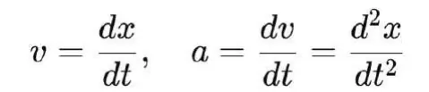
积分：他从加速度积分得到速度，从速度积分得到位移，重建了整体轨迹。
运动方程：在 F=ma 的框架下，牛顿用微分方程建立动力学模型，再通过积分得到预测结果。
这使得科学第一次真正能够统一微分与积分，统一发现与发明。
2. 莱布尼茨与符号化的普及
莱布尼茨的贡献在于发明了dx、dy与∫的符号体系。
dx 表示微小差异，dy/dx 表示差异比值；
∫ 表示无穷多个差异的累积。
他的符号不仅直观而优雅，而且极易操作与推广。正因为如此，莱布尼茨的符号体系在欧洲大陆迅速传播，成为今天全世界通用的标准。
莱布尼茨的视角强调：微积分不仅是解决物理问题的工具，更是普遍演算的逻辑。这一点使微积分能够在未来自然延伸到力学之外的其他学科。
3. 18世纪的严格化：欧拉、拉格朗日与柯西
牛顿与莱布尼茨虽然奠定了微积分，但他们的定义并不完全严格。所谓“无穷小”究竟是什么，长期困扰着数学家。
欧拉：把微积分运用于数论与函数论，推动了大量计算成果。
拉格朗日：通过级数展开来重新定义导数。
柯西：引入极限与ε-δ定义，使微积分建立在严谨基础之上。
这种严格化过程表明：微积分要想扩展到更多领域，必须不断自我修正与再发明。
4. 经典微积分的早期应用领域
在18世纪和19世纪，经典微积分主要在以下领域获得发展：
天文学：开普勒的定律被牛顿微积分框架化，行星轨道的预测依赖微分方程与积分解。
力学工程：桥梁、建筑、机械的稳定性计算，都依赖微积分工具。
光学与声学：光线传播与声波振动的建模，均用到微分方程。
这些应用奠定了微积分在科学中的核心地位：它不只是一个数学分支，而是解释与预测自然的通用语言。
5. 小结
经典微积分与力学紧密结合，成为科学革命的数学核心。
牛顿：用微积分建构运动与力学模型；
莱布尼茨：用符号化推动普遍演算；
欧拉、拉格朗日、柯西：用严格化保证数学基础。
在这个阶段，微积分完成了第一次扩张：从力学起点扩展到整个自然科学。这为后续偏微分方程、数值方法、随机微积分与分数阶微积分的诞生奠定了基础。
第二节：偏微分方程与连续场科学
1. 微积分的瓶颈与突破
在牛顿与莱布尼茨的框架中，微积分主要应用于一维运动：位移随时间的变化，速度与加速度的计算。这种 常微分方程（ODE） 在处理点质量的运动时极其有效。然而，随着科学的发展，研究对象不再是单一的质点，而是 连续分布的物质场：
温度场：空间中每一点的温度随时间变化；
波动场：绳子或空气中波的传播；
电磁场：空间中电场与磁场的分布与相互作用；
流体场：空气或水在不同空间点的速度与压力变化。
这些现象不可能用单变量函数来表达，而必须引入 多变量函数 和 偏导数。于是，偏微分方程（PDE）成为描述连续场的自然工具。
2. 热传导方程：第一个典范
1822年，傅里叶在研究热传导时提出著名的 热传导方程：
这个方程的意义在于：
它不再描述单点的变化，而是描述整个温度场在时间与空间中的演化；
它是科学史上第一个系统使用偏微分方程的模型；
它引发了傅里叶级数的发展，用以求解 PDE 的边值问题。
傅里叶方程表明：微积分通过 PDE 完成了第一次真正的“场论扩张”。
3. 波动方程：声音与光的数学
另一条重要的扩张是 波动方程：
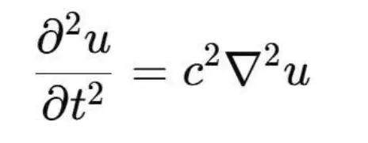
其中 u 表示波的位移，c 是波速。
波动方程广泛应用于：
声学：解释声波在空气中的传播；
光学：解释光的波动性质；
工程：解释振动与共振现象。
波动方程揭示：自然界的许多传播现象，都可以统一地用偏微分方程来刻画。
4. 麦克斯韦方程组：电磁学的统一
19世纪，麦克斯韦将电学与磁学统一为 电磁场论，其核心就是四个偏微分方程：
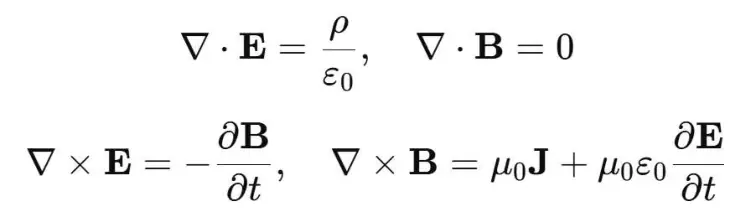
这些方程的深远意义在于：
它们完全建立在偏微分算子之上；
它们不仅解释了电与磁的关系，还预言了电磁波；
光被证明是电磁波的一种。
这是科学史上第一次用 PDE 形式统一自然界的两种基本现象。
5. 流体力学：纳维-斯托克斯方程
流体运动的复杂性使科学家必须借助 PDE。纳维与斯托克斯提出的方程：
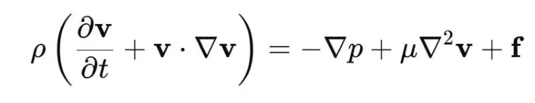
其中 v 是速度场，p 是压力，ρ 是密度，μ 是粘度，f 是外力。
这个方程至今仍是数学与科学的难题（千禧年难题之一），但它已经成为气象学、航空学、海洋学的基石。
6. 数学方法的扩张
为了求解 PDE，人类发明了一系列新的数学工具：
傅里叶级数与傅里叶变换：展开函数，解决边值问题；
格林函数：处理非齐次方程；
变分法：从泛函极值推导 PDE；
谱理论：分析解的稳定性与性质。
这些工具不仅推动了数学本身的发展，也不断反馈到物理学、工程学与应用科学。
7. 小结：PDE与连续场科学的崛起
偏微分方程的出现，标志着微积分从“点质量的运动”扩展到“连续场的演化”。
热传导 → 能量流动；
波动方程 → 声光传播；
麦克斯韦方程组 → 电磁统一；
纳维-斯托克斯方程 → 流体科学。
微积分通过 PDE 成为 场科学的通用语言，为现代物理学、工程学与技术革命奠定了基础。
第三节：离散化与数值微积分
1. 从解析解到数值解
在牛顿和欧拉的时代，微积分的理想是找到“解析解”，即通过公式精确表示方程的解。然而，随着科学问题复杂化，越来越多的微分方程和偏微分方程无法用解析方法解决。例如：
纳维–斯托克斯方程几乎没有解析解；
非线性波动方程难以写出闭合解；
高维复杂系统方程根本不可能用手工公式表达。
于是，科学家们转向 数值微积分：通过离散化方法，把连续方程转化为可计算的离散形式，借助计算机进行近似求解。
2. 差分方法：连续的离散化
最早的数值方法是 有限差分法。
思想：用有限差商近似微分。例如：
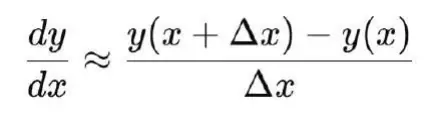
应用：
热传导方程的数值解；
振动方程的近似计算。
差分法的意义在于：它把“连续的微分”转化为“离散的差分”，让计算机能够处理。
3. 有限元方法：分解的智慧
20世纪中期，有限元方法（FEM） 崛起，成为工程科学的主力工具。
思想：把连续区域分割成有限个小单元（如三角形、四面体），在每个单元内近似解PDE，再拼合整体解。
应用领域：
桥梁和建筑的结构分析；
飞机和汽车的空气动力学仿真；
医学成像（CT、MRI）的数值重建。
有限元方法的价值在于：它使科学与工程问题真正可解，把微积分推广到任何复杂几何与边界条件下。
4. 计算机与数值微积分的结合
数值微积分的繁荣，与计算机的兴起密不可分。
1940s–1950s：电子计算机问世，差分方程求解进入实用化。
1970s：有限元软件广泛应用，成为工程标准。
2000s：超级计算机使全球气候模型、分子动力学模拟成为可能。
今天的科学研究，几乎所有重大工程与应用问题，都离不开数值微积分：
气候模拟：PDE + 数值方法 + 超算；
航空航天：流体力学模拟 + 有限元；
生物医学：血流模拟、器官仿真；
工业设计：有限元成为 CAD/CAE 的基础。
5. 数值误差与稳定性
数值微积分并不是完美的，它伴随误差与不稳定性：
截断误差：有限差分近似导致结果偏差；
舍入误差：计算机有限精度造成累积误差；
稳定性问题：某些算法在长时间步长下解会“爆炸”。
这使得数学家们开发出稳定性分析、收敛性理论，推动了数值分析学科的发展。
6. 小结：微积分的离散化扩张
数值微积分是微积分发展的第三次扩张：
差分方法：从解析转向离散；
有限元方法：从简单几何转向复杂系统；
计算机结合：让数值微积分成为现实世界的主要计算工具。
这一扩张使微积分走出了理论数学的书本，进入工业、工程、医学和环境科学，成为现代文明的基础工具。
第四节：随机微积分与概率科学
1. 随机性的挑战
经典微积分建立在 差异稳定化 的基础之上。只有当 ΔSIO 在特征律下表现为稳定模式时，微分与积分才有意义。然而，现实世界中大量现象表现为强烈的 随机性：
物理学中的布朗运动：悬浮颗粒的轨迹完全不可预测；
生物学中的基因表达：同一条件下，细胞反应差异极大；
金融市场中的价格波动：价格曲线充满不规则震荡。
这些现象无法用经典微积分中的光滑函数来刻画。为了把随机性纳入数学框架，随机微积分（Stochastic Calculus）应运而生。
2. 布朗运动与维纳过程
20世纪初，爱因斯坦和斯摩卢霍夫斯基用统计物理解释布朗运动。随后，维纳提出了 维纳过程：一种数学上的理想化随机过程，描述粒子在随机波动下的轨迹。
维纳过程的性质：
连续但处处不可微；
其增量服从正态分布。
这意味着，经典微分无法处理这种曲线。于是，数学家伊藤清提出了 伊藤微积分，重新定义了“随机情况下的微分与积分”。
3. 伊藤微积分
在伊藤框架下，函数 f(x) 对随机过程 X(t) 的微分被重新定义为：
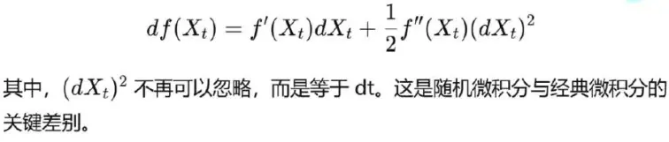
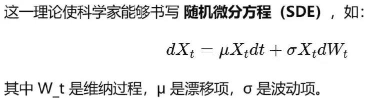
4. 应用领域
随机微积分在20世纪和21世纪成为多个领域的核心工具：
物理学：描述扩散、噪声与量子涨落；
金融学：布莱克–舒尔斯模型用随机微分方程解释期权定价；
生物学：建模神经元发放、基因表达、种群随机波动；
气候科学：随机项解释天气与气候的不可预测成分。
随机微积分不仅是一个数学分支，更是现代科学面对随机复杂世界的必要语言。
5. 概率科学与SIO思想
在SIO思想体系下，随机微积分有了新的哲学意义：
经典微积分描述的是差异稳定化后的 忠实规律；
随机微积分则承认差异在更复杂层级上仍然保持不确定性；
它通过“概率性特征律”来建立稳定性：不是每一次都相同，而是统计意义上可重复。这说明科学并不要求绝对确定，而是接受差异的多样性与随机性，通过新的微积分形式加以吸纳。
6. 小结
随机微积分是微积分发展的第四次扩张：
从确定性到随机性；
从光滑曲线到不可微过程；
从确定方程到随机方程。
它让科学能够拥抱真实世界的随机性，把“噪声”转化为“知识”。
第五节：分数阶微积分与复杂性科学
1. 为什么需要分数阶微积分
经典微积分假设：
微分表示局部瞬时的变化；
积分表示对差异的累积。
这种处理方式非常适合 无记忆系统：当前状态仅依赖于此刻的变量与瞬时变化率。然而，在现实世界中，许多系统表现出强烈的 记忆效应 与 复杂行为：
材料的粘弹性：受力后的反应不仅取决于当前力，还取决于过去的历史。
神经元放电：响应模式依赖于长期刺激的积累。
生态系统：种群动态依赖于长期环境与交互历史。
复杂网络：节点之间的相互作用呈现多尺度与长期耦合。
经典微积分难以捕捉这种 跨时间尺度的关联。于是，分数阶微积分（FractionalCalculus） 应运而生。
2. 分数阶微积分的基本思想
分数阶微积分的核心在于：微分与积分的阶数可以是非整数。
经典导数：一阶、二阶、三阶……
分数阶导数：0.5阶、0.8阶、1.2阶……
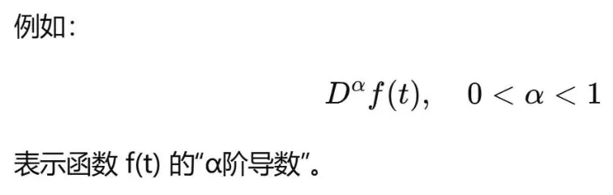
其物理意义是：当前变化率不仅依赖于瞬时差异，还依赖于 过去所有历史差异的加权平均。
3. 数学形式
常见定义有：
Riemann–Liouville 分数阶导数：
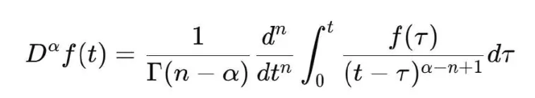
Caputo 分数阶导数：更适合处理初值问题。
这些定义揭示：分数阶导数是“积分与微分的混合”，体现了历史记忆效应。
4. 应用领域
分数阶微积分正在多个复杂性领域发挥作用：
材料科学：粘弹性材料的应力–应变关系；
生物学：神经元的记忆效应与长时程依赖；
控制理论：分数阶控制器比整数阶控制器更灵活稳定；
网络科学：复杂网络的多尺度动力学建模；
生态学与医学：疾病传播的记忆效应建模。
5. 分数阶微积分与复杂性科学
在SIO思想体系下：
经典微积分对应“局部差异的忠实”与“整体模型的发明”；
分数阶微积分对应“差异的历史依赖”与“复杂系统的多层纠缠”。
它表明：科学不能只看瞬时，还必须承认差异在时间与空间上的 长期纠缠。
6. 小结
分数阶微积分是微积分发展的第五次扩张：
从整数阶到分数阶；
从无记忆系统到有记忆系统；
从简单动力学到复杂性科学。
它成为研究粘弹性、神经科学、复杂网络等前沿科学的关键工具。
总结
微积分自牛顿与莱布尼茨之手诞生以来，经历了三百多年的发展，它不仅是科学的工具，更是一种不断扩展与自我重生的数学语言。本章展示了微积分如何随着科学的发展而不断演化：
1. 经典微积分 起源于力学，是牛顿运动学与动力学的核心。它第一次把“差异关系”符号化为微分方程，并通过积分发明整体轨迹，奠定了现代科学的根基。
2. 偏微分方程 的兴起，使微积分从单点运动扩展到连续场的研究。热传导、波动、电磁学、流体力学等领域都依赖 PDE，这标志着微积分成为场科学的通用语言。
3. 数值微积分 的发展，使微积分从理论走向应用。有限差分、有限元方法借助计算机，使气候模拟、工程仿真、医学成像成为可能，推动科学直接服务于文明与产业。
4. 随机微积分 的发明，把不确定性纳入数学体系。布朗运动、金融市场、神经元信号……这些充满随机性的现象，只有通过随机微分方程与伊藤积分，才能得到刻画。5. 分数阶微积分 的兴起，把记忆效应与复杂性纳入科学语言。复杂材料、神经网络、生态系统和复杂网络，只有通过分数阶导数才能揭示长期依赖与多尺度纠缠。
6. 泛函分析与无限维空间（虽未展开详细写作）进一步表明，微积分已经进入无限维空间的层级：量子力学的希尔伯特空间、费曼路径积分、现代人工智能中的核方法，都是这一扩张的结果。
这一切说明：微积分并不是一个完成的数学分支，而是科学文明不断推进过程中，差异—整体循环的数学化形式。
微分 仍然承担“忠实”的功能：它精确抄写差异关系，把世界的瞬时动态符号化。
积分 仍然承担“发明”的功能：它把无数差异累积为整体模型，创造新的理论与意义。科学的发展 不断产生新的差异与异常，推动微积分形式自我扩张，从经典到偏微分，从解析到数值，从确定到随机，从整数到分数，从有限到无限。
因此，微积分不仅是科学的数学工具，更是科学知识循环的“自适应语言”。它随着差异的涌现与模型的重建不断更新自身。微积分之所以能跨越数百年仍然充满生命力，原因正是在于它体现了 科学的本质：忠实与发明的统一，差异与整体的循环。
最终结论：
微积分不是完成态，而是生成态；
微积分的发展史，就是科学文明应对差异、吸纳异常、重建整体的历史；
微积分是科学的数学内核，同时也是科学自我演化的镜像。